Ngày 11 tháng 11 năm 2026 · Nguyễn Quốc Trung
Văn bản này đề nghị mã hoá Quốc Âm Tân Tự (QATT), một loại chữ ghi âm cho tiếng Việt, thành 164 ký tự trong một khối mới của Mặt phẳng Đa ngữ Bổ sung. Chữ này có nguồn gốc từ một văn bản thế kỷ XIX và ngày nay được một cộng đồng nhỏ sử dụng.
| Mục | Nội dung |
|---|---|
| Chữ viết | Quốc Âm Tân Tự (國音新字, QATT) |
| Người đề xuất | Nguyễn Quốc Trung, nhà nghiên cứu độc lập |
| Phiên bản | Alpha 1 |
| Ngày của bản thảo | 2026-11-11 |
| Ký tự | 164: 154 thành phần, 2 ký tự nối, 8 dấu thanh (4.1) |
| Mô hình | Các thành phần nguyên tử, trái trước phải và dưới trước trên, mọi tổ hợp được viết với một ký tự nối tường minh (5) |
| Sử dụng hiện nay | Một cộng đồng người học và người viết trên web, với phông chữ, trình soạn thảo, bộ chuyển đổi và một bộ gõ của nhiều nhà phát triển (3) |
| Mặt phẳng | Mặt phẳng Đa ngữ Bổ sung, vị trí khối do UTC ấn định |
| Hướng viết | Theo Hán Nôm (nguồn viết dọc) |
| Nguồn | Hai bản chép tay của cùng một văn bản, Viện Nghiên cứu Hán Nôm, Hà Nội, AB.636. Không cổ hơn đời Thiệu Trị (1841–1847) |
Quốc Âm Tân Tự (國音新字, "chữ mới ghi âm của tiếng nước nhà") là một loại chữ ghi âm cho tiếng Việt. Chữ được xây từ 22 cơ sở, mỗi cơ sở có bảy dạng; các dạng đứng riêng hoặc kết hợp thành nhóm hai hay ba, và mọi chữ đều có thể mang một dấu thanh ở một trong các góc.
Chữ này được biết đến qua một văn bản duy nhất, lưu giữ trong hai bản chép tay tại Viện Nghiên cứu Hán Nôm ở Hà Nội (7.1). Văn bản gọi tên chữ ở đầu đề bài tựa, 國音新字序, "tựa chữ mới ghi âm của tiếng nước nhà" (tr. 1). Văn bản không ghi niên đại. Nó không cổ hơn đời vua Thiệu Trị (1841–1847), vì chữ 華 bị bớt nét cuối, một chữ kiêng huý tên mẹ nhà vua, bà Hồ Thị Hoa (tr. 1). Chữ kiêng huý chỉ cho biết mốc sớm nhất. Tác giả ký tên ở cuối bài tựa là 南城居士阮子 (Nam Thành cư sĩ Nguyễn Tử), một nho sĩ tại gia (cư sĩ) họ Nguyễn ở Nam Thành (tr. 2). Ông nói rằng mình đặt ra chữ này để ghi chép riêng cho bản thân. Bài tựa giải thích ý tưởng đằng sau chữ:
窃想書契之造，必有一箇簡易之格，而人物聲音靡有遺者。
Tôi trộm nghĩ rằng khi chữ viết mới được tạo ra, ắt phải có một phép đơn giản, dễ dùng, nhờ đó không sót âm thanh nào của người và vật.
Trong nguồn, chữ này xuất hiện giữa văn bản Hán Nôm và được đối xử hệt như chữ Hán Nôm. Nguồn không có đoạn văn liền mạch nào viết bằng chữ này: nó chỉ đưa ra từng chữ làm ví dụ và các công thức đánh vần theo lối phiên thiết (反切, tiếng Trung fǎnqiè: chú âm một âm tiết bằng hai chữ, một chữ cho phụ âm đầu và một chữ cho vần; 7.4). Chữ ba thành phần (Tham Thư) có hai ví dụ. Nguồn mô tả cách phát âm của chúng nhưng không cho cách đọc (7.5). Tám thanh được đánh dấu bằng vòng tròn và nửa vòng tròn ở các góc, theo phép âm dương của Trung Hoa.
Nguyễn Quang Hồng đã công bố một bản mô tả chữ này năm 1986 (Phụ lục C). Đề xuất này dựa trên chính nguồn.
Chữ có 22 cơ sở, gọi là Cán (幹, 'thân'), mỗi cơ sở vẽ bằng ba nét. Một cơ sở có bảy dạng. Một dạng không có nét đánh dấu: Cán trơn. Sáu dạng có một nét đánh dấu ngắn ở một trong sáu đầu nét, đánh số từ 1 đến 6: dạng có nét ở vị trí 1 là Cán đánh dấu, năm dạng còn lại là Chi (枝, 'cành'). Bảng dưới cho thấy các dạng của cơ sở thứ nhất, ONG.
| Thành phần | Số lượng | Dạng | Ví dụ (ONG) | Đứng riêng | Trong tổ hợp |
|---|---|---|---|---|---|
| Cán đánh dấu | 22 | nét đánh dấu ở vị trí 1 | | có | không có trong nguồn |
| Chi | 110 (22 × 5) | nét đánh dấu ở vị trí 2 đến 6 | | có | bên trái, bên phải, hoặc trên một cặp |
| Cán trơn | 22 | không có nét đánh dấu | | có, với cách đọc của Cán đánh dấu | bên trái hoặc bên phải |
Các dạng này là thành phần của chữ, và nguồn ghép các chữ của mình từ chúng. Hai thành phần viết cạnh nhau trong một ô tạo thành một chữ, gọi là một cặp. Cán trơn và Chi đều đứng được ở bên trái và ở bên phải của một cặp (7.4). Nguồn cho quy tắc đọc của hai loại cặp. Trong cặp phiên thiết, Cán trơn đứng trước và Chi thuộc một cơ sở khác. Trong Hợp Thư, Chi đứng trước và Cán trơn thuộc cùng cơ sở (7.4). Một cặp có thể mang thành phần thứ ba, một Chi, ở phía trên: đó là Tham Thư, mà nguồn cho thấy trên một Hợp Thư (7.5). Mọi chữ đều có thể mang một trong tám dấu thanh ở một trong bốn góc (7.6).
Bài tựa rút điều này từ Kinh Dịch, trong đó một số ít ký hiệu kết hợp với nhau mà thành vô số:
嘗考之三易卦，始於兩，次於四，成於八，重之爲六十四，変之爲四千九十六。
Tôi từng khảo các quẻ của ba bộ Dịch: bắt đầu từ hai, kế đến bốn, thành tám; chồng lên thì thành sáu mươi bốn, biến đổi thì thành bốn nghìn không trăm chín mươi sáu.
Bố cục. Nguồn viết các thành phần của một chữ theo hai cách sắp xếp, cạnh nhau () và ở trên (). Theo ký hiệu của các Ký tự Mô tả Chữ Hán (Ideographic Description Characters), các chữ mà nguồn giải thích là:
[ONG J CHONG-5] .[ONG-2 J ONG] .[ONG-5 J ONG C KHONG-5] . Hợp Thư giữ cách sắp xếp của nó trong nửa dưới.Các thành phần của một chữ chia đều ô chữ: mỗi nửa của chữ hai thành phần, và mỗi nửa của Tham Thư, được vẽ thu hẹp vào phần ô của nó. Trong mọi trường hợp, cách sắp xếp theo thứ tự lưu trữ: trong thành phần thứ nhất ở bên trái, và trong Tham Thư, Hợp Thư được lưu trước và vẽ ở dưới.
Thuật ngữ.
| Thuật ngữ | Nghĩa |
|---|---|
| Cán | Thuật ngữ của nguồn (幹, 'thân') chỉ một trong 22 cơ sở, mỗi cơ sở ba nét, liệt kê trong mục 幹音二十二字 (tr. 2). Mỗi Cán có dạng Cán đánh dấu và dạng Cán trơn |
| Cán đánh dấu | Cán có nét đánh dấu ở vị trí đầu (tổng cộng 22). Trong nguồn chỉ đứng riêng. Tên ký tự kết thúc bằng -1 |
| Chi | Thuật ngữ của nguồn (枝, 'cành') chỉ một trong năm dạng của mỗi cơ sở có nét đánh dấu ở vị trí 2 đến 6 (tổng cộng 110). Đứng riêng hoặc kết hợp |
| Cán trơn | Dạng của một cơ sở không có nét đánh dấu (tổng cộng 22). Đứng ở bên trái hoặc bên phải của một cặp. Khi đứng riêng, nó có cách đọc của Cán đánh dấu. Tên ký tự: chỉ tên của cơ sở |
| Cặp | Hai thành phần nối bằng ký tự nối thành phần và viết cạnh nhau trong một ô. Thuật ngữ mô tả của đề xuất này |
| Cặp phiên thiết | (反切 fǎnqiè) Tổ hợp của một Cán trơn và một Chi thuộc hai cơ sở khác nhau, Cán trơn đứng trước, nối bằng ký tự nối thành phần. Được mô tả dưới mục Phiên Thiết Hài Âm Pháp (反切諧音法). Tổng cộng 2.310. Trong mục đếm số được tính là 合書 với Cán ở bên trái. Thuật ngữ mô tả của đề xuất này |
| Hợp Thư | Tổ hợp của một Chi và một Cán trơn cùng cơ sở, Chi đứng trước, nối bằng ký tự nối thành phần. Theo công thức của nguồn, Cán trơn cho vần. Tổng cộng 110, và 22 Hợp Thư của hai Cán trơn cùng một cơ sở (một chữ được chứng thực, có thể là viết nhầm) |
| Tham Thư | Một cặp có thành phần thứ ba, một Chi, ở phía trên. Nguồn mô tả nó trên một Hợp Thư (12.100 chữ có thể có, hai chữ được chứng thực). Công thức nêu thành phần dưới trước |
| Ký tự nối thành phần | Ký tự định dạng nối hai thành phần thành một chữ. Thứ tự của chúng cho biết cách sắp xếp |
| Ký tự nối Tham Thư | Ký tự định dạng đặt Chi theo sau lên trên cặp đứng trước |
Unicode Consortium đòi hỏi ba điều ở một chữ viết mới: chữ được một cộng đồng độc lập với người tạo ra nó sử dụng, bộ ký tự ổn định, và văn bản thuần bằng chữ đó cần được trao đổi. Phần này lần lượt trả lời ba điều đó.
Chữ này do một tác giả tạo ra vào thế kỷ XIX để ghi chép riêng (2.1). Việc sử dụng ngày nay độc lập với ông và không chỉ giới hạn ở người đề xuất:
Các nguồn trên web được liệt kê ở Phụ lục C. Các hình cho thấy ví dụ: chữ viết tay của một người dùng (Hình 1), một bài hướng dẫn (Hình 2), bộ chuyển đổi (Hình 3) và một bài đăng với văn bản trong các phông chữ của qatt.org (Hình 4).
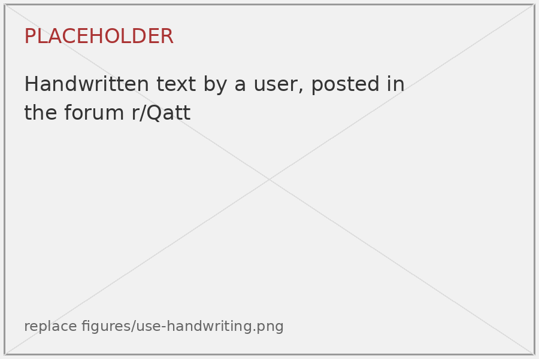
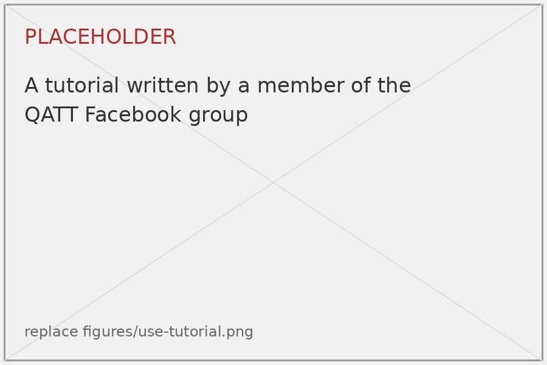
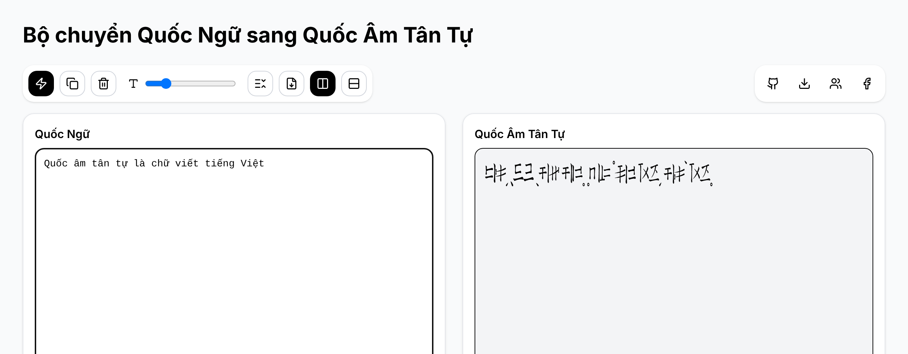
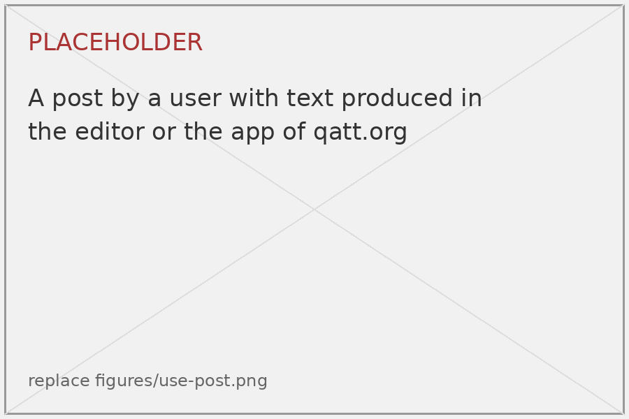
Phần mềm của các nhà phát triển khác. Hai chương trình cho chữ này do những người khác ngoài người đề xuất viết, và cả hai đều được công bố dưới dạng mã nguồn mở (Phụ lục C). Bộ chuyển đổi là một ứng dụng web với hai phông chữ, một cho văn bản ngang và một cho văn bản dọc, cùng một bảng các âm tiết tiếng Việt. Tài liệu của nó nêu mục tiêu của dự án là một bảng mã chuẩn, một phông chữ Unicode hoàn chỉnh và việc đưa chữ này vào Unicode. Bộ gõ, của một nhà phát triển thứ hai, lấy bảng của bộ chuyển đổi và gõ chữ này vào bất kỳ ứng dụng nào trên Windows. Lần thay đổi gần nhất của nó là vào tháng 11 năm 2026. Cả hai chương trình lưu văn bản theo một cách mã hoá riêng, được mô tả ở 3.4.
Tài nguyên trên qatt.org. Trang web của người đề xuất, qatt.org, theo hiểu biết của ông là nguồn tài liệu đầy đủ nhất về chữ này hiện nay. Nó được nêu ở đây vì đó là thứ cộng đồng đang dùng, và nó được phát triển với sự tham khảo ý kiến của hai cộng đồng (3.5). Trang web cung cấp:
Trang web ở dạng hiện nay đã hoạt động từ ngày 28 tháng 10 năm 2026. Từ đó đến ngày 9 tháng 11 năm 2026, trang có trung bình 46 người truy cập mỗi ngày, từ 17 đến 158. Trong 14 ngày đến ngày 9 tháng 11, trình soạn thảo được mở 558 lần, hơn một nửa số lần từ Việt Nam, bảng ký hiệu 212 lần, trang về các bản giải mã 124 lần và bản thảo đề xuất này 162 lần ở bản tiếng Anh và tiếng Việt. Người dùng đăng lên mạng xã hội các văn bản họ tạo bằng trình soạn thảo và ứng dụng trong các phông chữ này (Hình 4). [TBD: cập nhật số liệu trước khi nộp]
Chữ này đã được Nguyễn Quang Hồng mô tả trong giới nghiên cứu năm 1986 (Phụ lục C); ông đã phải in các chữ của nó (Hình 5). [TBD: nghiên cứu học thuật]
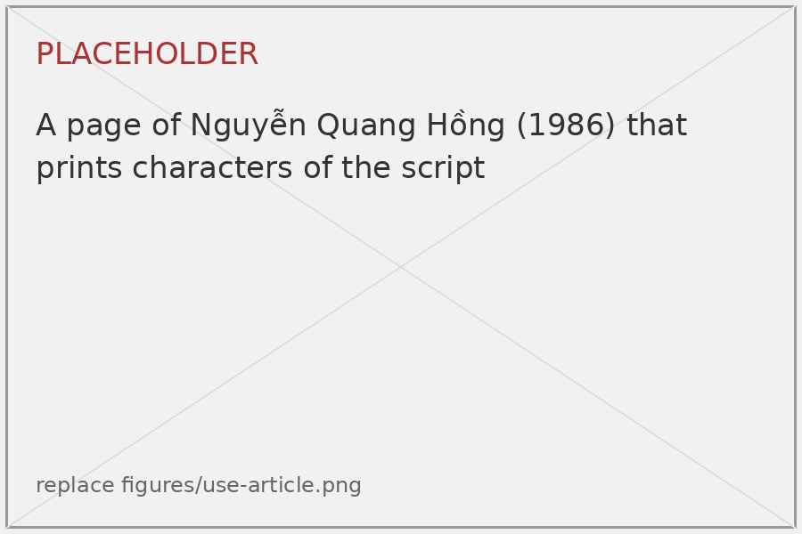
Người dùng ngày nay viết một âm tiết như nguồn mô tả: một Cán trơn cho phụ âm đầu, một Chi cho vần và một dấu thanh (Hình 6). Một Chi ghi vần nào thì do một cách đọc bảng vần của nguồn quyết định, gọi là bản giải mã. Nguồn chỉ cho cách đọc của các Chi qua chú âm Nôm, và không phải tất cả đều xác định được (7.3). Hai bản giải mã đã được công bố và đang được dùng, một trên Omniglot và một trên qatt.org (Phụ lục C). Chúng thống nhất về cấu trúc của âm tiết và về các phụ âm đầu, và khác nhau ở vần của một số Chi, nên một văn bản được đọc theo bản giải mã của người viết.
Việc mã hoá không phụ thuộc vào bản giải mã. Các ký tự được phân biệt và đặt tên theo hình dạng, tức là cơ sở và vị trí của nét đánh dấu, chứ không theo âm (4.3). Văn bản viết theo bản giải mã nào cũng được ghi bằng cùng các ký tự.
Một cách viết ngày nay khác với nguồn. Một bộ chuyển đổi trên web mà nhiều người dùng làm theo viết phụ âm đầu bằng Cán đánh dấu, dạng có nét đánh dấu ở vị trí 1, ở chỗ nguồn viết Cán trơn (7.3). Văn bản như vậy có tồn tại, và việc mã hoá ghi lại nó đúng như được viết: Cán đánh dấu, ký tự nối và Chi (5.1).
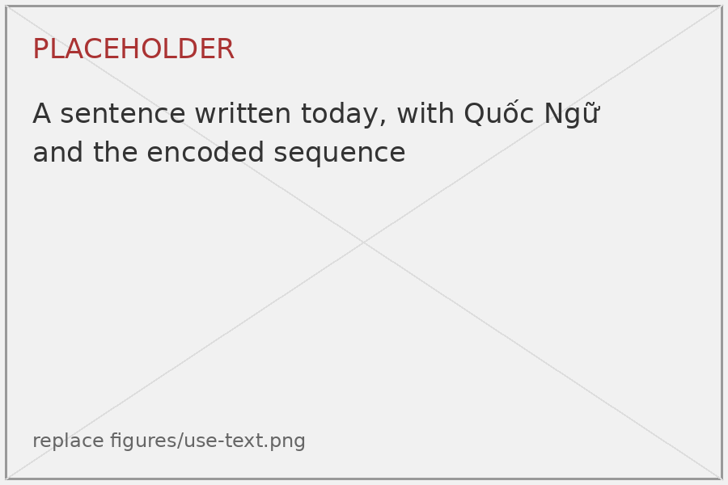
Tham Thư ngày nay không được dùng để viết tiếng Việt. Người dùng đưa nó ra để giải thích và thảo luận cách chữ vận hành, và họ bàn xem nó có thể ghi những phụ âm mà chữ không có cơ sở, như p và w, hoặc phân biệt d với gi hay không. Các thảo luận này liên quan đến cách viết âm tiết bằng các thành phần đã có. Chúng không thêm ký tự nào.
Bộ ký tự đã khép kín. Nguồn định nghĩa nó như một hệ thống, 22 cơ sở với bảy dạng và tám dấu thanh (2.2), và từ đó đến nay không có gì được thêm vào. Người dùng ngày nay viết bằng cùng các thành phần và dấu thanh và không thêm ký tự nào. Bộ chuyển đổi của một nhà phát triển khác (3.1) được xây dựng mà không biết đến đề xuất này, và có cùng bộ ký tự: 22 phụ âm đầu, 110 vần và tám thanh, tức là 22 cơ sở, 110 Chi của chúng và tám dấu thanh. Các công cụ chuyển đổi giữa Quốc Ngữ và chữ này gán các âm tiết tiếng Việt cho các chuỗi của những ký tự này. Đó là vấn đề chính tả và không thêm gì vào bộ ký tự. Dấu câu là dấu câu của Hán Nôm (6.3).
Unicode chưa có ký tự nào của chữ này, nên văn bản số bằng chữ này ngày nay được viết theo hai cách mã hoá không tương thích với nhau, hoặc bằng hình ảnh.
Cách mã hoá của bộ chuyển đổi. Bộ chuyển đổi và bộ gõ xây dựng dựa trên nó (3.1) lưu một điểm mã cho mỗi âm tiết: 21.780 âm tiết tổ hợp sẵn, mọi tổ hợp của 22 phụ âm đầu, 110 vần và một thanh, cùng 140 điểm mã cho riêng phụ âm đầu, vần và dấu thanh. Các phông chữ của chúng phủ 21.920 điểm mã từ U+10000 đến U+15613. Tài liệu của bộ chuyển đổi coi vùng này là vùng dùng riêng. Thực ra đây là phần đầu của Mặt phẳng Đa ngữ Bổ sung: 12.503 điểm mã trong số đó là các ký tự đã được gán trong Unicode 18.0, thuộc 104 khối, trong đó có Linear B, chữ hình nêm (Cuneiform) và chữ tượng hình Ai Cập, và các điểm mã còn lại chưa được gán. Bảng dưới cho ba ví dụ từ bảng âm tiết của bộ chuyển đổi.
| Điểm mã | Trong bộ chuyển đổi | Trong Unicode |
|---|---|---|
| U+10109 | âm tiết oan | AEGEAN NUMBER THREE |
| U+12002 | âm tiết nung | CUNEIFORM SIGN A TIMES BAD |
| U+13001 | âm tiết chen | EGYPTIAN HIEROGLYPH A002 |
Hình 7 cho thấy một câu được chuyển bằng nó, trong phông chữ của nó và trong phông chữ của các chữ viết sở hữu những điểm mã này.
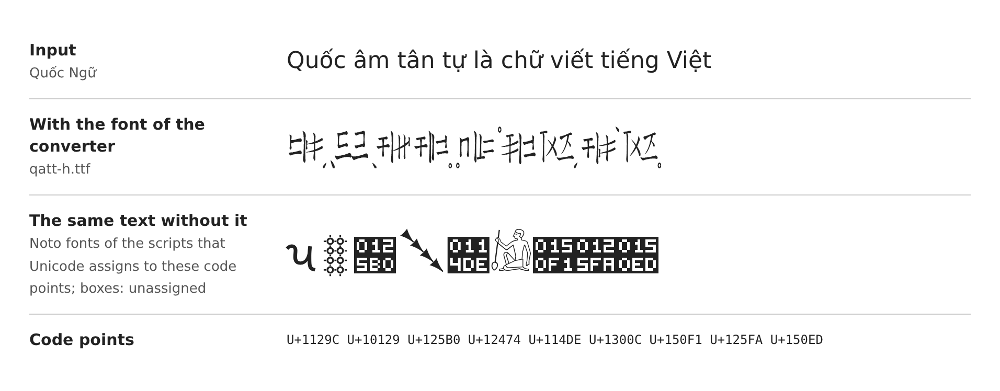
Vì vậy, văn bản sao chép từ bộ chuyển đổi hoặc gõ bằng bộ gõ, đối với mọi chương trình khác, là văn bản chữ hình nêm, chữ tượng hình Ai Cập và các chữ viết khác của vùng này. Không có phông chữ của bộ chuyển đổi, nó được hiển thị, tìm kiếm, sắp xếp và ngắt dòng như các chữ đó; còn với phông chữ ấy, văn bản thật của các chữ đó lại hiển thị thành Quốc Âm Tân Tự. Bộ chuyển đổi sao chép văn bản như vậy vào bộ nhớ tạm và bộ gõ gõ nó vào bất kỳ ứng dụng nào, nên lượng văn bản này tăng lên theo mỗi người dùng của hai chương trình.
Cách mã hoá của qatt.org. Phông chữ, trình soạn thảo và bộ chuyển đổi của người đề xuất dùng các điểm mã của Vùng Dùng riêng Bổ sung-A (U+F0000..U+F00AF), sắp xếp như đề xuất ở đây. Văn bản viết bằng chúng chỉ đọc được với các phông chữ này. Điểm mã dùng riêng không có thuộc tính được ấn định, nên việc tìm kiếm, sắp xếp, ngắt dòng và phân đoạn văn bản như vậy tuỳ thuộc từng ứng dụng.
Văn bản theo một trong hai cách mã hoá không đọc được bằng công cụ của cách kia. Không cách nào có thể trở thành chuẩn: cách thứ nhất chiếm điểm mã của các chữ viết khác, cách thứ hai theo định nghĩa là dùng riêng. Chừng nào chữ này chưa có điểm mã riêng, mỗi công cụ mới phải chọn một trong hai hoặc thêm cách thứ ba. Việc mã hoá trong Unicode chấm dứt tình trạng này. Mỗi điểm mã của bộ chuyển đổi ứng với một phụ âm đầu, một vần và một thanh, nên văn bản hiện có có thể được chuyển một cách máy móc sang các ký tự đề xuất ở đây, và văn bản của qatt.org bằng cách dịch chuyển các điểm mã.
Việc mã hoá chữ này cho phép phiên âm, trích dẫn và tìm kiếm văn bản của nguồn theo một dạng chuẩn, và cho phép dùng chữ này bên cạnh Hán Nôm và Quốc Ngữ trong cùng một tài liệu, như trong nguồn (2.1). Mô hình của đề xuất (5) được xây dựng để mọi chữ của nguồn đều viết được, kể cả Tham Thư được chứng thực trong nguồn (7.5).
Mô hình của đề xuất này đã được triển khai và kiểm tra trên nguồn. Toàn bộ Nguồn 1 đã được phiên âm theo mô hình này, và mọi chữ của chữ viết này trong nguồn, kể cả hai Tham Thư, đều được viết bằng 164 ký tự đề xuất ở đây (3.1). Phông tham chiếu, QATT Pen, ghép mọi chữ từ các thành phần của nó bằng các quy tắc thay thế và định vị, không dùng glyph tổ hợp sẵn (5.5). Trình soạn thảo của trang web và của ứng dụng lưu văn bản như đề xuất ở đây, theo bố cục của khối đề xuất trên các điểm mã dùng riêng bắt đầu từ U+F0000. Người đề xuất đã kiểm tra việc hiển thị trong Chrome trên Android và macOS, trong Firefox trên Android và trong Android WebView. Trình soạn thảo và ứng dụng ngày càng được dùng nhiều, và chưa có báo cáo lỗi hiển thị nào (Hình 8).
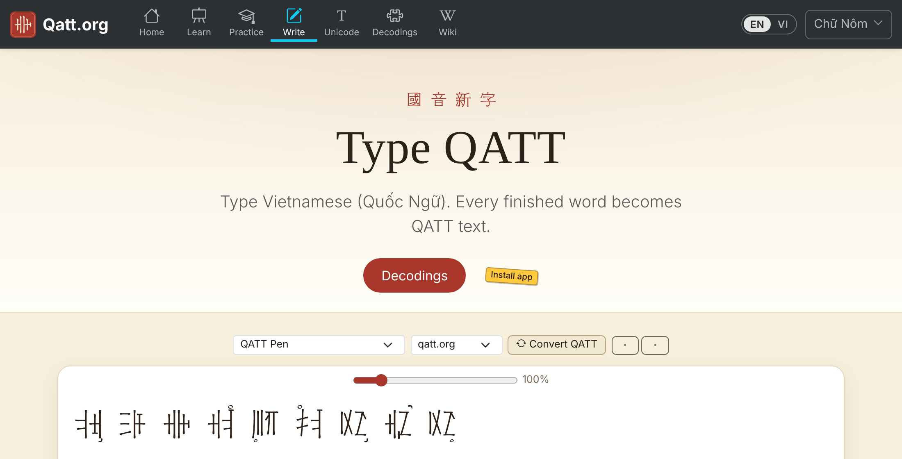
Hai cộng đồng người dùng, diễn đàn r/Qatt (qua máy chủ Discord của nó) và nhóm Facebook QATT, đã được hỏi ý kiến về đề xuất này ngày 29 tháng 10 năm 2026. Cả hai đều đón nhận với sự quan tâm. Không ai phản đối mô hình hay tên ký tự, kể cả tên GIONG cho cơ sở của d và gi (4.3). Một thành viên đề nghị một thứ tự điểm mã khác (4.5).
| Nhóm | Số ký tự |
|---|---|
| Cán trơn | 22 |
| Cán đánh dấu | 22 |
| Chi | 110 |
| Ký tự nối thành phần | 1 |
| Ký tự nối Tham Thư | 1 |
| Dấu thanh (kết hợp) | 8 |
| Tổng cộng | 164 |
Cán đánh dấu và Cán trơn của một cơ sở không được hợp nhất, dù Cán trơn khi đứng riêng có cách đọc của Cán đánh dấu (7.3). Ba sự kiện giữ chúng tách biệt. Thứ nhất, nguồn xử lý chúng khác nhau: nguồn ghép Cán trơn và không bao giờ ghép Cán đánh dấu, nên văn bản phải ghi lại nó chứa dạng nào. Thứ hai, Cán đánh dấu là một trong sáu dạng có đánh dấu của cơ sở: nét đánh dấu ở vị trí 1 thuộc cùng dãy với các vị trí 2 đến 6, tức các Chi, và hợp nhất nó với dạng trơn sẽ lấy một vị trí ra khỏi dãy đó và biến nó thành một biến thể glyph chọn theo ngữ cảnh. Thứ ba, nguồn viết cả hai dạng đứng riêng trong cùng loại công thức: ở tr. 6, công thức của một cặp phiên thiết đánh vần bằng Cán trơn của ONG (cột thứ nhất), công thức của một Hợp Thư bằng Cán đánh dấu của ONG (cột thứ bảy), và công thức ở tr. 7 đánh vần một cặp phiên thiết bằng Cán đánh dấu. Với chừng ấy lần xuất hiện, không thể xác định người viết có muốn phân biệt các cách dùng này hay không. Một bản phiên âm phải giữ dạng mà nguồn viết, nên mỗi dạng có điểm mã riêng. Văn bản ngày nay thêm một sự kiện thứ tư: cả hai dạng đều xuất hiện làm thành phần thứ nhất của một cặp (3.2), và chỉ các ký tự riêng biệt mới ghi lại được người viết đã dùng dạng nào.
Những gì nguồn cho thấy về bộ ký tự.
| Nhóm | Được mã hoá | Có trong nguồn |
|---|---|---|
| Cán đánh dấu | 22 | 22, trong bảng liệt kê (tr. 2) |
| Chi | 110 | 109, trong bảng (tr. 3–4). Đầu đề và các con số của nguồn cho 110 |
| Cán trơn | 22 | ONG, NGONG, DONG, TONG, BONG và PHONG (7.3). Các con số của nguồn cần đủ 22 (7.4) |
| Dấu thanh | 8 | 8, trên một chữ (tr. 5) |
| Ký tự nối | 2 | Không phải ký tự của nguồn. Chúng ghi lại hai cách sắp xếp mà nguồn viết, cạnh nhau (7.4) và chồng lên trên (7.5) |
Một Chi được mã hoá dù bảng không có. Bảng Chi có 109 dạng trong cả hai nguồn. Dạng không được viết là KHONG-4, ở chỗ chuyển từ tr. 3 sang tr. 4. Nó được mã hoá vì chính nguồn tính với 110: đầu đề của bảng nêu 110 Chi (枝字一百一十字), và mục đếm số cho 880 Chi đứng riêng (110 × 8), 880 Hợp Thư (110 × 8) và 18.480 cặp phiên thiết (22 × 105 × 8, tr. 8, 7.4). Hình dạng của nó được hệ thống xác định: nét đánh dấu ở vị trí 4 của KHONG, giữa vị trí của KHONG-3 và KHONG-5, mà bảng có. Cán trơn của 16 cơ sở cũng dựa trên cùng các con số đó. Nếu UTC chỉ muốn mã hoá những gì được viết, vị trí của KHONG-4 (+6D) có thể được để dành, còn mô hình, tên và các độ lệch khác không đổi.
Ký tự nối Tham Thư có thể quyết định riêng. Đây là ký tự duy nhất của bộ ký tự chỉ phục vụ Tham Thư, và Tham Thư là phần kém chắc chắn nhất của chữ: hai ví dụ trong nguồn, không có cách đọc được nêu (7.5), và ngày nay không được dùng để viết tiếng Việt (3.2). 163 ký tự còn lại tạo thành một mô hình đầy đủ cho mọi thứ khác mà nguồn cho thấy, và không thuộc tính nào của chúng phụ thuộc vào ký tự nối này. Thiếu nó, hai Tham Thư được chứng thực không thể viết thành chữ đơn trong văn bản thuần. Nếu UTC muốn hoãn nó, vị trí của nó (+9B) có thể được để dành và các điểm mã còn lại giữ nguyên độ lệch.
Vì sao không tổ hợp sẵn. Nguồn đếm 2.420 cặp: 2.310 cặp phiên thiết và 110 Hợp Thư, mỗi cặp với tám thanh (7.4). Quy tắc Tham Thư của nguồn cho thêm 110 × 110 = 12.100. Đó là các tổ hợp mà nguồn cho cách đọc. Các thành phần cho phép nhiều hơn hẳn: 132 × 132 = 17.424 cặp gồm Cán trơn và Chi, 20.328 cặp nếu tính cả Cán đánh dấu ở bên trái (5.1), và mỗi cặp với một trong 110 Chi ở trên. Chỉ riêng các tổ hợp mà nguồn đọc được, tổ hợp sẵn đã cần 14.520 điểm mã, và một danh sách như vậy sẽ bỏ sót cặp hai Cán trơn mà nguồn viết (7.4) và cách viết ngày nay (3.2). Tổ hợp sẵn vừa không khả thi vừa không có cơ sở.
164 ký tự nằm vừa trong một khối 176 điểm mã (11 cột 16), đề xuất cho Mặt phẳng Đa ngữ Bổ sung. Vị trí khối do UTC ấn định. Điểm mã theo thứ tự của 22 Cán trong nguồn, và bảy dạng của mỗi cơ sở liền nhau: dạng trơn, Cán đánh dấu và năm Chi. Vì vậy 22 dạng trơn không nằm thành một dãy liền. Chúng là các dạng ở mỗi vị trí thứ bảy (+00, +07, … +93).
| Nhóm | Độ lệch trong khối | Số lượng |
|---|---|---|
| Bảy dạng của mỗi cơ sở: dạng trơn, Cán đánh dấu và năm Chi | +00 đến +99 | 154 (22 cơ sở × 7) |
| Ký tự nối thành phần | +9A | 1 |
| Ký tự nối Tham Thư | +9B | 1 |
| Dấu thanh | +9C đến +A3 | 8, theo thứ tự truyền thống của tám thanh (xem dưới) |
| Để dành | +A4 đến +AF | 12 |
Dấu thanh theo thứ tự truyền thống của tám thanh, cách đánh số 1 đến 8 dùng trong phương ngữ học Trung Hoa: âm bình, dương bình, âm thượng, dương thượng, âm khứ, dương khứ, âm nhập, dương nhập, tức là theo loại thanh và trong mỗi loại âm trước dương. Sáu thanh đầu ứng với thứ tự thanh tiếng Việt ngang, huyền, hỏi, ngã, sắc, nặng dùng trong từ điển và trong việc sắp xếp tiếng Việt. Nguồn liệt kê các dấu theo thứ tự khác, trước là bốn nửa vòng tròn rồi đến bốn vòng tròn, mỗi loại bắt đầu ở góc dưới trái và đi theo chiều kim đồng hồ (tr. 5). Thứ tự đó trình bày các dấu theo hình dạng và không được dùng cho điểm mã.
| Độ lệch | Dấu | Thanh |
|---|---|---|
| +9C | Nửa vòng tròn, dưới trái | âm bình (ngang) |
| +9D | Vòng tròn, dưới trái | dương bình (huyền) |
| +9E | Nửa vòng tròn, trên trái | âm thượng (hỏi) |
| +9F | Vòng tròn, trên trái | dương thượng (ngã) |
| +A0 | Nửa vòng tròn, trên phải | âm khứ (sắc) |
| +A1 | Vòng tròn, trên phải | dương khứ (nặng) |
| +A2 | Nửa vòng tròn, dưới phải | âm nhập |
| +A3 | Vòng tròn, dưới phải | dương nhập |
Tên dùng chữ in hoa ASCII không dấu, theo yêu cầu của Unicode. Các mẫu:
QUOC AM TAN TU LETTER <NAME>
QUOC AM TAN TU LETTER <NAME>-<N>
QUOC AM TAN TU THAM THU COMBINER
QUOC AM TAN TU COMPONENT JOINER
QUOC AM TAN TU COMBINING TONE CIRCLE UPPER LEFT
QUOC AM TAN TU COMBINING TONE SEMICIRCLE LOWER RIGHT
Dấu thanh dùng các góc UPPER LEFT, UPPER RIGHT, LOWER LEFT và LOWER RIGHT, mỗi góc cho vòng tròn và nửa vòng tròn. Tên mô tả dấu. Thanh mà dấu biểu thị được ghi thành chú thích, chẳng hạn QUOC AM TAN TU COMBINING TONE SEMICIRCLE LOWER LEFT = âm bình (ngang). Danh sách tên có tham chiếu chéo đến các ký tự đã có liên quan: mỗi dấu thanh tham chiếu đến chữ cái biến âm có độ rộng cho cùng thanh (U+A700..U+A707) và đến dấu thanh chữ Hán cho cùng góc (U+302A..U+302D).
154 thành phần là chữ cái, nên tên của chúng chứa LETTER, còn dấu thanh là ký tự kết hợp, nên tên chứa COMBINING. Tên chỉ mô tả hình dạng và không nói gì về chức năng. Dạng không có nét đánh dấu lấy tên trơn của cơ sở. Dạng có nét đánh dấu lấy tên của cơ sở với một gạch nối và một số từ 1 đến 6, số đó là vị trí của nét đánh dấu trong sáu đầu nét, đếm ngược chiều kim đồng hồ từ vị trí đầu của Cán đánh dấu (7.3). Số 1 là Cán đánh dấu, 2 đến 6 là năm Chi, chẳng hạn QUOC AM TAN TU LETTER ONG-1 đến QUOC AM TAN TU LETTER ONG-6. Các vị trí là tương đối so với Cán đánh dấu và nằm ở chỗ khác nhau với các cơ sở khác nhau, nên tên đánh số chúng thay vì mô tả hình học. Dạng ngắn này cũng tránh WITH, từ mà trong tên ký tự thường nối một chữ cơ sở với một dấu phụ được mã hoá riêng; nét đánh dấu không phải là ký tự riêng và các dạng không có phân rã. Danh sách tên ghi loại thành chú thích.
Tên của 22 Cán là tên âm của chúng trong bảng liệt kê của nguồn (4.5), nơi mỗi Cán được chú bằng một chữ Nôm. Chú âm không có ký tự đã mã hoá được ghi bằng Chuỗi Mô tả Chữ Hán. Mỗi tên là âm tiết của phụ âm đầu với vần ông. Mọi dạng của một cơ sở lấy tên Cán của nó. Dấu phụ được bỏ. Nguồn có một Cán cho phụ âm đầu d và gi, vì không Cán nào trong 22 là Cán của gi, và không có Cán nào cho đ ngoài đông, nên nét ngang của đ có thể bỏ mà không trùng: đông → DONG, và Cán của d và gi là GIONG.
| STT | Chú âm Nôm | Cách đọc | Phụ âm đầu | Tên trong tên ký tự | không nét | -6 |
|---|---|---|---|---|---|---|
| 1 | 翁 | ông | Ɂ | ONG | +00 | +06 |
| 2 | 木禺 | ngông | Ng | NGONG | +07 | +0D |
| 3 | 胸 | hông | H | HONG | +0E | +14 |
| 4 | 木功 | gông | G | GONG | +15 | +1B |
| 5 | 工 | công | C | CONG | +1C | +22 |
| 6 | | lông | L | LONG | +23 | +29 |
| 7 | 竜里 | trông | Tr | TRONG | +2A | +30 |
| 8 | 東 | đông | Đ | DONG | +31 | +37 |
| 9 | 農 | nông | N | NONG | +38 | +3E |
| 10 | 宗 | tông | T | TONG | +3F | +45 |
| 11 | 通 | thông | Th | THONG | +46 | +4C |
| 12 | 亻戍 | nhông | Nh | NHONG | +4D | +53 |
| 13 | 柊 | chông | Ch | CHONG | +54 | +5A |
| 14 | 月容 | giông (cũng là dông) | D, Gi | GIONG | +5B | +61 |
| 15 | 衝 | xông | X | XONG | +62 | +68 |
| 16 | 空 | không | Kh | KHONG | +69 | +6F |
| 17 | 滝 | sông | S | SONG | +70 | +76 |
| 18 | 山庸 | rông | R | RONG | +77 | +7D |
| 19 | 蒙 | mông | M | MONG | +7E | +84 |
| 20 | | bông | B | BONG | +85 | +8B |
| 21 | | vông | V | VONG | +8C | +92 |
| 22 | 口風 | phông | Ph | PHONG | +93 | +99 |
Bảng mã xếp 22 cơ sở theo hàng, bảy dạng của mỗi cơ sở theo cột (không nét đánh dấu, -1 đến -6), tiếp theo là hai ký tự nối và tám dấu thanh, được thể hiện trên Cán trơn của ONG. Các glyph là của phông tham chiếu (5.5). Điểm mã là điểm mã tạm thời của bản thảo. Chỉ các độ lệch thuộc về đề xuất.
Điểm mã tạm thời U+F0000..U+F00AF; các độ lệch là của đề xuất. Trình bày bằng QATT Pen, phông tham chiếu.
| Cơ sở | không | -1 | -2 | -3 | -4 | -5 | -6 |
|---|---|---|---|---|---|---|---|
| 01 ONG | +00 | +01 | +02 | +03 | +04 | +05 | +06 |
| 02 NGONG | +07 | +08 | +09 | +0A | +0B | +0C | +0D |
| 03 HONG | +0E | +0F | +10 | +11 | +12 | +13 | +14 |
| 04 GONG | +15 | +16 | +17 | +18 | +19 | +1A | +1B |
| 05 CONG | +1C | +1D | +1E | +1F | +20 | +21 | +22 |
| 06 LONG | +23 | +24 | +25 | +26 | +27 | +28 | +29 |
| 07 TRONG | +2A | +2B | +2C | +2D | +2E | +2F | +30 |
| 08 DONG | +31 | +32 | +33 | +34 | +35 | +36 | +37 |
| 09 NONG | +38 | +39 | +3A | +3B | +3C | +3D | +3E |
| 10 TONG | +3F | +40 | +41 | +42 | +43 | +44 | +45 |
| 11 THONG | +46 | +47 | +48 | +49 | +4A | +4B | +4C |
| 12 NHONG | +4D | +4E | +4F | +50 | +51 | +52 | +53 |
| 13 CHONG | +54 | +55 | +56 | +57 | +58 | +59 | +5A |
| 14 GIONG | +5B | +5C | +5D | +5E | +5F | +60 | +61 |
| 15 XONG | +62 | +63 | +64 | +65 | +66 | +67 | +68 |
| 16 KHONG | +69 | +6A | +6B | +6C | +6D | +6E | +6F |
| 17 SONG | +70 | +71 | +72 | +73 | +74 | +75 | +76 |
| 18 RONG | +77 | +78 | +79 | +7A | +7B | +7C | +7D |
| 19 MONG | +7E | +7F | +80 | +81 | +82 | +83 | +84 |
| 20 BONG | +85 | +86 | +87 | +88 | +89 | +8A | +8B |
| 21 VONG | +8C | +8D | +8E | +8F | +90 | +91 | +92 |
| 22 PHONG | +93 | +94 | +95 | +96 | +97 | +98 | +99 |
| COMPONENT JOINER | THAM THU COMBINER | Dấu thanh, thể hiện trên Cán trơn của ONG | |||||||
|---|---|---|---|---|---|---|---|---|---|
◌ +9A | ◌ +9B | +9C | +9D | +9E | +9F | +A0 | +A1 | +A2 | +A3 |
Nguồn liệt kê 22 Cán trong mục 幹音二十二字, "âm thân, hai mươi hai chữ", mỗi Cán được chú tên bằng chữ Nôm (tr. 2). Thứ tự này nhóm các phụ âm đầu đại khái theo vị trí cấu âm. Nó không có ý nghĩa mã hoá, nên điểm mã theo thứ tự của bảng liệt kê đó. Trong mỗi cơ sở, năm Chi theo thứ tự vị trí của nét đánh dấu, ngược chiều kim đồng hồ từ vị trí của Cán đánh dấu (7.3). Bảy dạng của một cơ sở nối tiếp nhau: dạng trơn trước, rồi đến sáu dạng có đánh dấu. Vì vậy điểm mã được nhóm theo cơ sở. Vì một cặp phiên thiết bắt đầu bằng một Cán trơn và một Hợp Thư bằng một Chi, việc so sánh nhị phân các chuỗi điểm mã, không cần quy tắc sắp xếp nào, xếp mọi tổ hợp vào khoảng của cơ sở của thành phần thứ nhất.
Thứ tự khác. Một thành viên của cộng đồng người dùng đề nghị xếp điểm mã theo dạng thay vì theo cơ sở: trước là 22 Cán trơn, rồi 22 Cán đánh dấu, rồi 110 Chi. Khi đó mỗi loại sẽ là một khoảng liền. Tuy nhiên, khi so sánh nhị phân, mọi Hợp Thư, vốn bắt đầu bằng một Chi, sẽ xếp sau mọi cặp phiên thiết, xa các chữ khác của cơ sở của nó, và chỉ một quy tắc sắp xếp riêng mới gom chúng lại được. Bản thảo giữ thứ tự theo cơ sở, thứ tự mà nguồn liệt kê các Cán và lập bảng các Chi. Mọi thành phần có cùng thuộc tính theo cả hai thứ tự, nên lựa chọn này không ảnh hưởng đến phân đoạn, ngắt dòng hay phông chữ.
Sắp xếp mặc định. Vì khó có một quy tắc sắp xếp riêng, trọng số mặc định trong DUCET thực tế là thứ tự sắp xếp của chữ này. Bản thảo đề xuất: 154 thành phần nhận trọng số chính theo thứ tự điểm mã; tám dấu thanh nhận trọng số phụ theo thứ tự của 4.2, để các chữ chỉ khác nhau về thanh xếp cạnh nhau và thanh chỉ quyết định sau các thành phần; ký tự nối thành phần và ký tự nối Tham Thư được bỏ qua, nên một tổ hợp được xếp như các thành phần của nó theo thứ tự lưu trữ. Văn bản không có quy tắc sắp xếp, so sánh theo điểm mã, cho cùng thứ tự của các thành phần.
Chữ này được mã hoá thành 164 ký tự nguyên tử: 154 thành phần, hai ký tự nối và tám dấu thanh. Các thành phần được lưu trái trước phải và, trong Tham Thư, dưới trước trên, như các công thức của nguồn nêu chúng, và được vẽ theo thứ tự đó. Không thành phần nào bị đổi thứ tự. Mọi tổ hợp được viết với một ký tự nối tường minh, và các thành phần không có ký tự nối là các ký tự riêng. Chữ hai và ba thành phần là các chuỗi, nên mọi chữ đều chỉnh sửa được và ranh giới của nó được xác định cục bộ.
Character := Cluster [ToneMark]
Cluster := Component | Pair | ThamThu
Component := UnmarkedCan | Chi | MarkedCan
Pair := Left Joiner Right
Left := UnmarkedCan | Chi | MarkedCan
Right := UnmarkedCan | Chi
ThamThu := Pair Combiner Chi
Ngữ pháp được phát biểu theo vị trí. Nó cho biết loại thành phần nào đứng ở bên trái của một cặp, ở bên phải của một cặp và ở trên một cặp. Cơ sở của các thành phần không đóng vai trò gì trong đó. Mỗi vị trí được điền đúng như chứng cứ cho thấy:
| Vị trí | Cán trơn | Chi | Cán đánh dấu |
|---|---|---|---|
| Bên trái của một cặp | Nguồn: cặp phiên thiết (7.4) | Nguồn: Hợp Thư (7.4) | Văn bản ngày nay (3.2) |
| Bên phải của một cặp | Nguồn: Hợp Thư (7.4) | Nguồn: cặp phiên thiết (7.4) | Không được chứng thực, không có trong ngữ pháp |
| Trên một cặp | Không được chứng thực, không có trong ngữ pháp | Nguồn: Tham Thư (7.5) | Không được chứng thực, không có trong ngữ pháp |
Trong văn bản và trong các bảng, một chuỗi được viết trong ngoặc vuông: mỗi thành phần được ghi bằng tên cơ sở của nó, theo sau là -n với dạng có nét đánh dấu (ONG, ONG-4). J là ký tự nối thành phần và C là ký tự nối Tham Thư. Ở chỗ cần nói về loại thay vì cơ sở, CM là Cán đánh dấu, CH là Chi và CU là Cán trơn, với cơ sở trong ngoặc khi cần (CU(X), CH(Y)), và TONE là một dấu thanh. Chẳng hạn, [ONG-5 J ONG C KHONG-5] là Hợp Thư của ONG với Chi KHONG-5 ở trên.
Ký tự nối thành phần nối hai thành phần thành một chữ, và thứ tự của chúng cho biết cách sắp xếp. Các thành phần không có ký tự nối là các ký tự riêng. Cán trơn đứng riêng có cách đọc của Cán đánh dấu của cơ sở đó (7.3).
| Chữ | Chuỗi | Ví dụ |
|---|---|---|
| Cán đánh dấu đứng riêng | CM | [ONG-1] |
| Chi đứng riêng | CH | [ONG-2] |
| Cán trơn đứng riêng (cách đọc của Cán đánh dấu) | CU | [ONG] |
| Các thành phần cạnh nhau, không ghép | CU(X) CH(Y) | [ONG CHONG-5] |
| Cặp: cặp phiên thiết của nguồn | CU(X) J CH(Y) | [ONG J CHONG-5] |
| Cặp: Hợp Thư của nguồn | CH(X) J CU(X) | [ONG-2 J ONG] |
| Cặp: hai Cán trơn, có viết trong nguồn (7.4) | CU(X) J CU(X) | [ONG J ONG] |
| Tham Thư | CH(X) J CU(X) C CH(Z) | [ONG-5 J ONG C KHONG-5] |
| Bất kỳ chữ nào ở trên kèm một thanh | chuỗi + TONE | [ONG-2 J ONG TONE-CIRCLE-LOWER-LEFT] |
Vì sao ngữ pháp đi theo vị trí. Nguồn định nghĩa các thành phần và ghép chúng lại. Các quy tắc đọc của nguồn, cặp phiên thiết và Hợp Thư, cho âm của 2.420 cặp, và mục đếm số của nguồn đếm đúng các cặp này (7.4). Một cặp nằm ngoài chúng không có cách đọc theo quy tắc của nguồn. Đó là một nhận định về chính tả của nguồn, không phải về chữ viết như một hệ thống: cũng những thành phần ấy, ở cũng hai vị trí ấy, tạo nên mọi cặp khác. Chính nguồn viết một cặp như vậy, hai Cán trơn trong một chữ (7.4), và văn bản ngày nay viết một cặp khác, Cán đánh dấu ở bên trái (3.2). Vì vậy ngữ pháp không liệt kê các tổ hợp được chứng thực. Với mỗi loại thành phần, nó hỏi loại đó được chứng thực ở vị trí nào, và chấp nhận mọi tổ hợp của các vị trí ấy.
Một cách mã hoá chỉ chấp nhận các tổ hợp đã có cách đọc sẽ cố định một lối chính tả. Cách đọc của các Chi chưa được xác lập (7.3), hai bản giải mã đang được dùng (3.2), và người dùng đang bàn về những cách viết khác với cùng các thành phần (3.2). Một thay đổi về chính tả không được biến văn bản thành chuỗi sai quy cách, cũng như một cuộc cải cách chính tả của một ngôn ngữ viết bằng chữ Latinh không làm cho một dãy chữ cái mới trở nên sai quy cách. Các ký tự nối của chữ tượng hình Ai Cập theo cùng nguyên tắc: chúng sắp xếp bất kỳ ký hiệu nào, và tiêu chuẩn không giữ danh sách các nhóm được chứng thực (5.2).
Mọi chuỗi của ngữ pháp được hiển thị theo một quy tắc (5.5): hai thành phần của một cặp chia ô chữ, đặt cạnh nhau, và một Chi sau ký tự nối Tham Thư đứng trên cặp đó. Mỗi chuỗi cho một hình khác nhau, nên không chữ nào có hai cách viết.
Các thành phần được lưu theo thứ tự viết, trái trước phải, như trong một Chuỗi Mô tả Chữ Hán. Trong Hợp Thư, Chi được viết bên trái và được lưu trước, nên việc hiển thị không cần đổi thứ tự. Thứ tự lưu trữ không phụ thuộc vào chức năng của các thành phần. Công thức của nguồn, vốn nêu Chi trước, phù hợp với điều đó (7.4).
Ký tự nối mang thông tin mà riêng các thành phần không có. Nguồn viết các thành phần cạnh nhau mà không ghép (7.3), nên CU CH có thể là hai thành phần riêng hoặc một cặp phiên thiết, và CH CU có thể là một Chi theo sau bởi một Cán trơn riêng hoặc một Hợp Thư. Ký tự nối quyết định. Vì vậy mọi chữ hai thành phần được chứng thực đều chứa nó.
Vì sao cần ký tự nối. Không có ký tự nối, cách nhóm các thành phần sẽ phụ thuộc vào cơ sở của chúng, mà vẫn còn mơ hồ. Với Y ≠ X, chuỗi CH(X) CU(X) CH(Y) hợp lệ cả theo cách [CH(X) CU(X)][CH(Y)], một Hợp Thư theo sau bởi một Chi, lẫn theo cách [CH(X)][CU(X) CH(Y)], một Chi theo sau bởi một cặp phiên thiết. Một bộ phân tích sẽ phải so sánh cơ sở để nhóm văn bản mà vẫn phải chọn một cách đọc, và một chỉnh sửa thay đổi một cơ sở có thể nhóm lại các chữ bên cạnh. Có ký tự nối, CH(X) J CU(X) CH(Y) và CH(X) CU(X) J CH(Y) là hai cách đọc, còn CH(X) CU(X) CH(Y) là ba thành phần riêng: mỗi cách đọc có một cách viết, việc phân đoạn không cần so sánh cơ sở, và các chỉnh sửa giữ tính cục bộ. Với X = ONG và Y = CHONG, ba chuỗi đó là [ONG-2 J ONG CHONG-5] , [ONG-2 ONG J CHONG-5] và [ONG-2 ONG CHONG-5] .
Tiền lệ. Trong chuẩn đã có các ký tự đứng giữa hai ký tự và nối chúng thành một đơn vị. U+13430 EGYPTIAN HIEROGLYPH VERTICAL JOINER và U+13431 EGYPTIAN HIEROGLYPH HORIZONTAL JOINER là các ký tự định dạng (General_Category Cf) sắp xếp các ký hiệu quanh chúng chồng lên nhau hoặc cạnh nhau trong một ô vuông, như ký tự nối Tham Thư và ký tự nối thành phần làm trong một ô chữ. U+1107F BRAHMI NUMBER JOINER và U+2D7F TIFINAGH CONSONANT JOINER nối hai ký tự mà chúng đứng giữa, được mã hoá thành dấu không chiếm chỗ (Mn, lớp kết hợp 9). Chữ Khiết Đan nhỏ (Khitan Small Script) viết nhiều ký tự nguyên tử trong một ô vuông, do phông chữ ghép. Đề xuất theo mô hình Ai Cập, một ký tự định dạng. Việc có nên dùng dấu không chiếm chỗ hay không được đặt ra cho các chuyên gia (6.4). Các giá trị thuộc tính nêu ở đây là của Unicode 18.0.
Chỉnh sửa giữ tính cục bộ. Có ranh giới giữa hai ký tự hay không chỉ phụ thuộc vào chính hai ký tự đó (6.2). Vì vậy xoá hoặc chèn một ký tự chỉ thay đổi nhiều nhất là chữ ở chỗ đó và các chữ bên cạnh, dù các thành phần là gì.
Tám dấu thanh là các ký tự kết hợp đi sau toàn bộ cụm. Mỗi góc và mỗi loại dấu đều có giá trị khu biệt, nên một thanh là một ký tự chứ không phải một biến thể glyph. Một cụm không có dấu thanh để thanh không xác định. Nó không biểu thị thanh trung tính, vốn có dấu riêng (7.6). Vì vậy cần cả tám dấu. Hướng của nửa vòng tròn suy ra từ góc của nó và là một thuộc tính glyph. Một cụm mang nhiều nhất một dấu thanh. Hai dấu với một bộ chọn cho góc cũng không được, vì góc có giá trị khu biệt.
Hai bộ ký tự đã có được xem xét và không được dùng. U+A700..U+A707 MODIFIER LETTER CHINESE TONE YIN PING đến YANG RU bao gồm cùng tám thanh theo cùng thứ tự, nhưng chúng là các chữ cái biến âm có độ rộng (General_Category Sk) viết bên cạnh một âm tiết, không phải dấu kết hợp đặt ở góc của một chữ. Là các cụm grapheme riêng, chúng sẽ phá vỡ cấu trúc cụm, và phông chữ không thể đặt chúng trong ô. Hình dạng của chúng cũng khác: chúng phân biệt âm và dương bằng một gạch dưới, còn Quốc Âm Tân Tự bằng nửa vòng tròn và vòng tròn.
U+302A..U+302D IDEOGRAPHIC LEVEL, RISING, DEPARTING và ENTERING TONE MARK dùng cùng các góc cho cùng bốn loại thanh, nhưng không phân biệt âm và dương. Dùng chúng cho một âm vực và ký tự mới cho âm vực kia sẽ chia một bộ tám dấu khu biệt ra hai khối, và các dấu đã có sẽ mang một âm vực mà chúng không biểu thị.
Các phương án sau thay cho mô hình ký tự nối đã được xem xét. Các phương án cho bộ ký tự và dấu thanh được bàn ở 4.1, 5.3 và 7.5.
Một phông chữ phù hợp vẽ mọi cụm trong một ô vuông và ghép nó bằng các quy tắc thay thế và định vị, không bằng glyph tổ hợp sẵn.
Các thuộc tính đề xuất suy ra từ mô hình mã hoá: các thành phần là chữ cái, hai ký tự nối là ký tự định dạng, và dấu thanh là dấu không chiếm chỗ. Giá trị cho hai ký tự nối là đề xuất. Các quyết định đề nghị nhóm công tác đưa ra được tập hợp ở 6.4.
| Ký tự | General_Category | Lớp kết hợp | Grapheme_Cluster_Break | Line_Break | Bidi_Class |
|---|---|---|---|---|---|
| Cán đánh dấu, Cán trơn, Chi | Lo | 0 | Other | ID | L |
| Ký tự nối thành phần, ký tự nối Tham Thư | Cf | 0 | Extend | GL | BN |
| Dấu thanh (8) | Mn | 0 | Extend | CM | NSM |
Các tệp dữ liệu nháp liệt kê mọi giá trị, kể cả Indic_Conjunct_Break, East_Asian_Width và Vertical_Orientation. Các câu hỏi cần xem xét được tập hợp cùng với chúng.
Góc là một phần bản sắc của mỗi dấu thanh, nên không cần lớp kết hợp theo vị trí. Một cụm mang nhiều nhất một dấu thanh, nên không bao giờ xảy ra sắp xếp lại chính tắc giữa các dấu. Vì vậy cả tám dấu đều nhận lớp 0. Các dấu thanh chữ Hán U+302A..U+302D, vốn đánh dấu cùng các góc trên chữ Hán, lại có lớp theo vị trí (218 dưới trái, 228 trên trái, 232 trên phải, 222 dưới phải). Các lớp đó cũng dùng được ở đây, vì một cụm không bao giờ mang hai dấu thanh. Việc lựa chọn được đặt ra cho nhóm công tác (6.4).
Việc phân đoạn chỉ dùng quy tắc theo cặp: không có ranh giới ngay trước hoặc ngay sau mỗi ký tự nối, và không có ranh giới trước dấu thanh. Mọi chỗ khác đều là ranh giới. Dấu thanh khớp với Extend. Các thành phần không được nối, kể cả Cán trơn đứng riêng, tạo thành cụm riêng, nên mọi thành phần hành xử như nhau. Loại và cơ sở của các thành phần không đóng vai trò gì trong việc phân đoạn.
Đề xuất không phụ thuộc vào việc thay đổi thuật toán phân đoạn của UAX #29. Có hai mức:
Nguồn không nêu hướng viết. Cả hai bản chép đều là văn bản Hán Nôm viết dọc, và trong mọi trường hợp chữ này được đối xử hệt như Hán Nôm và chảy cùng với nó: dòng dọc, cột từ phải sang trái, không có dấu cách giữa các từ. Không có chứng thực về cách viết ngang. Vì vậy đề xuất giả định thói quen viết của Hán Nôm. Các chữ hành xử như chữ Hán, mỗi chữ chiếm một ô vuông. Đề xuất cho các thành phần: Bidi_Class L, Line_Break ID, East_Asian_Width W, Vertical_Orientation U. Dấu thanh và ký tự nối không bao giờ bắt đầu một dòng, vì chúng thuộc về cụm đứng trước. Các từ không được tách bằng dấu cách. Mỗi chữ là một âm tiết, và có thể ngắt dòng giữa hai chữ bất kỳ.
Chữ này không có dấu câu và chữ số riêng, và đề xuất không đưa ra ký tự nào như vậy. Trong các bản chép tay, ký hiệu duy nhất là các vòng tròn và nét son bên cạnh văn bản Hán Nôm. Người dùng ngày nay chấm câu như trong Hán Nôm, với các ký tự của khối CJK Symbols and Punctuation, như U+3002 IDEOGRAPHIC FULL STOP và U+3001 IDEOGRAPHIC COMMA.
Đề xuất đề nghị nhóm công tác đưa ra năm quyết định. Mỗi quyết định đã có một giá trị trong bản thảo, nên đề xuất đầy đủ mà không cần chúng. Các tệp dữ liệu nháp liệt kê mọi giá trị thuộc tính và một số câu hỏi chi tiết khác.
| Quyết định | Bản thảo | Phương án khác |
|---|---|---|
| Ký tự nối Tham Thư (4.1) | Mã hoá ngay | Hoãn, vị trí của nó (+9B) được để dành |
| General_Category của hai ký tự nối (5.2) | Cf, như các ký tự nối của chữ tượng hình Ai Cập | Mn với lớp kết hợp 9, như U+1107F BRAHMI NUMBER JOINER |
| Cụm grapheme (6.2) | Chữ này được thêm vào cách suy ra Indic_Conjunct_Break, để mỗi chữ là một cụm | Chỉ Grapheme_Cluster_Break=Extend, và ranh giới sau ký tự nối để cho việc điều chỉnh |
| Dấu thanh (5.3, 6.1) | Tám dấu kết hợp mới với lớp kết hợp 0 | Các lớp theo vị trí của U+302A..U+302D, hoặc hợp nhất với U+302A..U+302D cho một âm vực |
| Cán đánh dấu và Cán trơn (4.1) | Mã hoá riêng, mỗi loại 22 ký tự | Hợp nhất, dạng được chọn theo ngữ cảnh |
Hai nguồn chứng thực chữ này. Cả hai là bản chép tay của cùng một văn bản Hán Nôm viết dọc, mô tả các phương pháp kết hợp. Mỗi bản có bốn tờ đôi, đánh số thành tám trang, cùng nội dung và cùng cách đánh số trang. Cả hai đóng chung một tập với số tờ liên tục, Nguồn 1 ở tờ 3–10 và Nguồn 2 ở tờ 11–18. Chỉ dẫn trang trong đề xuất này cho biết trang trong từng bản chép, từ 1 đến 8. Hai văn bản khác nhau ở một chữ: ở cuối cột thứ nhất của tr. 2, Nguồn 1 viết 無 còn Nguồn 2 viết 者. Ở ba chỗ khác, người chép Nguồn 2 đã viết lại hoặc đảo chữ, và cách đọc đã sửa phù hợp với Nguồn 1. Nguyễn Quang Hồng (1986, Phụ lục C) viết rằng bản chép thứ nhất có vẻ là bản sao của bản thứ hai, nhưng không nêu lý do. Không có gì trong các bản chép cho thấy bản nào cổ hơn, nên không thể xác định một bản được chép từ bản kia hay cả hai từ một bản gốc cũ hơn. Hai nguồn là một văn bản trong hai bản chép. Các chỉ dẫn trang trong đề xuất này, như (tr. 2), là chỉ dẫn đến Nguồn 1. Vì hai bản chép có cùng cách đánh số trang và cách chia cột, chúng cũng áp dụng cho Nguồn 2. Nguồn 2 chỉ được nêu tên khi nó khác hoặc khi cách đọc của nó quan trọng. Các hình là phần cắt từ Nguồn 1 (Hình 9).
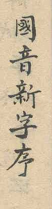
| Nguồn | Niên đại | Nơi lưu giữ | Loại văn bản | Hướng viết |
|---|---|---|---|---|
| Nguồn 1 | Thiệu Trị (1841–1847) hoặc muộn hơn | Viện Nghiên cứu Hán Nôm, Hà Nội, AB.636 | Bản chép tay, Hán Nôm, 4 tờ đôi | Dọc |
| Nguồn 2 | Thiệu Trị (1841–1847) hoặc muộn hơn | Viện Nghiên cứu Hán Nôm, Hà Nội, AB.636 | Bản chép tay, Hán Nôm, 4 tờ đôi | Dọc |
Cả hai bản chép tay được đóng chung một tập với ký hiệu AB.636 [TBD: đối chiếu với bản in của tạp chí hoặc thư mục của Viện], theo Nguyễn Quang Hồng (1986, Phụ lục C). Niên đại là của văn bản, suy từ chữ kiêng huý (2.1). Niên đại của hai bản chép không rõ.
Phụ lục B liệt kê các đoạn theo trang. Các thuật ngữ được giải thích ở 2.2.
| Đặc điểm | Chứng cứ |
|---|---|
| Cán đánh dấu | 22 Cán đánh dấu được liệt kê cùng tên âm của chúng trong mục 幹音二十二字 (tr. 2) |
| Cán trơn | Không được liệt kê. Xuất hiện trong các chữ ghép của ví dụ và đứng riêng, chẳng hạn với tám thanh (tr. 5–7) |
| Chi | Lập bảng trong mục 枝字一百一十字 theo khối năm dạng cho mỗi cơ sở: 109 dạng được viết so với 110 được nêu (tr. 3–4) |
| Cặp phiên thiết | Được mô tả trong mục 反切諧音法, từ tr. 5. Thành phần thuộc các cơ sở khác nhau, Cán trơn đứng trước. Cán trơn cho phụ âm đầu, Chi cho vần. Có các cặp trong phần giải thích (tr. 6) |
| Hợp Thư | Được mô tả trong văn bản. Mọi ví dụ đều là cặp cùng cơ sở với Chi đứng trước. Công thức của ví dụ minh hoạ nêu Chi trước và cho vần bằng Cán. Con số 880 (110 × 8 thanh) chỉ tính các cặp cùng cơ sở (tr. 8) |
| Vị trí của các thành phần | Cán trơn và Chi đều đứng ở bên trái và ở bên phải của một cặp. Chi đứng trên một cặp. Cán đánh dấu không được ghép (7.4, 7.5) |
| Tham Thư | Quy tắc được mô tả trong văn bản (參書下從合体上從枝体), phần dưới được hiểu là một Hợp Thư. Hai ví dụ được chứng thực, cả hai trên một Hợp Thư. Công thức của Tham Thư nêu thành phần dưới trước (tr. 7). Cách phát âm của từng ví dụ được mô tả, nhưng không có cách đọc |
| Thành phần đứng riêng và cạnh nhau | Khi giải thích cách các thành phần kết hợp, văn bản viết các thành phần đứng riêng và cạnh nhau mà không ghép: một Cán trơn đứng riêng trước một Chi, và hai Cán trơn đứng riêng trước một cặp phiên thiết (tr. 6) |
| Dấu thanh | Tám thanh ở bốn góc, được giải thích với góc của mỗi loại thanh và minh hoạ trên một chữ (tr. 4–5). Thanh ngang đánh dấu bằng nửa vòng tròn ở dưới trái. Chữ có và không có dấu thanh trong cùng một đoạn. Dạng tròn và góc cạnh của cùng một dấu (tr. 6) |
| Hướng viết | Văn bản không nói. Cả hai bản chép đều là Hán Nôm viết dọc |
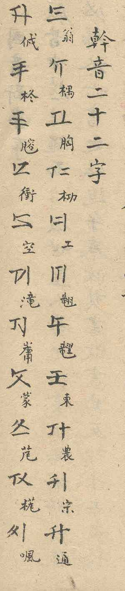
Chữ có 22 cơ sở (Cán, 幹, 'thân', mà nguồn viết với 音 trong đầu đề 幹音二十二字 của bảng liệt kê, tr. 2, và với 字 trong 二十二幹字為標, tr. 7), mỗi cơ sở vẽ bằng ba nét. Nguồn liệt kê 22 âm cơ sở (幹音二十二字, tr. 2). Mỗi âm được thể hiện bằng một chữ QATT mang một nét đánh dấu ngắn ở vị trí đầu, trên trái hoặc trên giữa tuỳ cơ sở, và bằng một chú âm Nôm cho biết âm của nó. Dạng này là Cán đánh dấu. Nét đánh dấu luôn nằm ở đầu một nét, nên ba nét cho sáu vị trí, đếm ngược chiều kim đồng hồ từ vị trí đầu là 1 đến 6. Cán đánh dấu có nét ở vị trí 1, và năm dạng có nét đánh dấu ở vị trí 2 đến 6 lần lượt là các Chi (枝, 'cành'). Hai thuật ngữ lấy hình ảnh một cái cây: 110 Chi tách ra từ 22 Cán. Dạng thứ bảy không có nét đánh dấu. Nguồn gọi cả dạng có đánh dấu lẫn dạng trơn là Cán: trong mục đếm số, 幹 chỉ Cán đứng riêng (單幹書) cũng như thành phần của một tổ hợp, vốn luôn là dạng trơn (幹体, tr. 8). Đề xuất này gọi dạng không có nét đánh dấu là Cán trơn để phân biệt hai dạng, và dùng cơ sở cho đơn vị bảy dạng. Dạng trơn được chứng thực với ONG, DONG, NGONG, TONG và PHONG (tr. 5–7), và với BONG trong Tham Thư thứ hai (7.5). Việc cả 22 cơ sở đều có dạng này suy ra từ các con số của nguồn (7.4), không từ một bảng liệt kê. Vì nét đánh dấu của mỗi Chi nằm ở vị trí khác với của Cán đánh dấu, không Chi nào trùng với Cán đánh dấu: mỗi cơ sở có sáu dạng đánh dấu khác nhau và một dạng trơn.
Các Chi được lập bảng trong mục 枝字一百一十字, "110 chữ Chi", theo khối năm dạng cho mỗi cơ sở (tr. 3–4). Bảng có 109 dạng, một dạng bị bỏ sót (KHONG-4). Nguồn chỉ cho cách đọc của các Chi qua chú âm Nôm bên cạnh mỗi dạng. Các chú âm này mơ hồ hoặc không có trong từ điển, nên cách đọc chưa được xác định. Việc mã hoá không phụ thuộc vào chúng, vì các dạng khác nhau ở vị trí của nét đánh dấu. Các chú âm không được phiên ở đây.
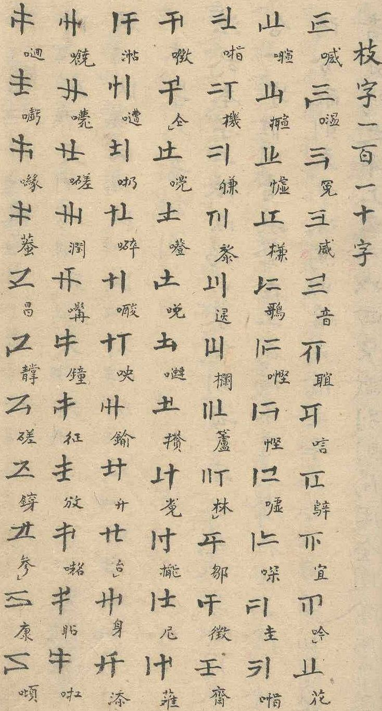
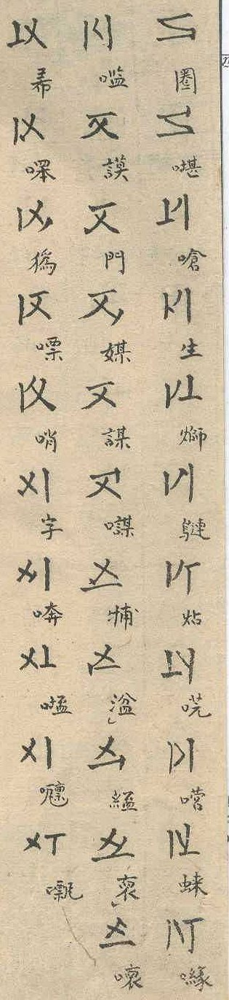
Ba loại có chức năng khác nhau. Trong cặp phiên thiết, Cán trơn cho phụ âm đầu của cơ sở và Chi cho vần. 110 Chi hợp lại thành bảng vần của chữ. Trong Hợp Thư, công thức của nguồn chỉ về chiều ngược lại (7.4). Cán đánh dấu đại diện cho cả âm tiết gồm phụ âm đầu của nó với vần ông và là tên của cơ sở. Nó dùng để đọc Cán trơn theo phép phiên thiết. Cán trơn và Chi cũng là thành phần của Tham Thư (7.5). Các ví dụ minh hoạ của nguồn cho thấy các chức năng này. Mỗi ví dụ giải thích một chữ ghép bằng một công thức theo lối phiên thiết, gồm chữ đó, 乃, hai chữ đánh vần và 反, trong đó chữ đánh vần thứ nhất cho phụ âm đầu và chữ thứ hai cho vần: cho một cặp phiên thiết ở tr. 7, cho một Hợp Thư ở tr. 6.
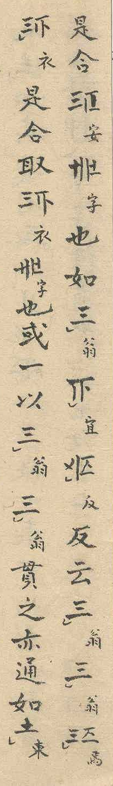
Không thể xác định từ nguồn liệu một thành phần có thể đứng riêng trong văn bản liền mạch hay không, vì nguồn không có đoạn văn liền mạch nào bằng chữ này (2.1). Trong các ví dụ này, Cán đánh dấu, Cán trơn và Chi đều xuất hiện đứng riêng, cả khi có dấu thanh, và ở chỗ văn bản giải thích cách các thành phần kết hợp, nó cũng viết chúng cạnh nhau mà không ghép: một Cán trơn đứng riêng trước một Chi, và hai Cán trơn đứng riêng trước một cặp phiên thiết (tr. 6). Cán trơn đứng riêng có cùng cách đọc với Cán đánh dấu của cơ sở đó: nguồn minh hoạ tám thanh trên Cán trơn đứng riêng của đông (tr. 5). Trong nguồn chỉ Cán trơn và Chi kết hợp. Cán đánh dấu thì không. Ngoài bảng liệt kê 22 Cán (tr. 2), Cán đánh dấu chỉ xuất hiện hai lần, cả hai lần là chữ riêng có cách đọc, trong các công thức giải thích một chữ ghép (tr. 6, tr. 7). Lần thứ hai có dấu thanh.
Hai thành phần viết cạnh nhau trong một ô tạo thành một chữ. Nguồn mô tả hai phương pháp, mỗi phương pháp có một quy tắc đọc.
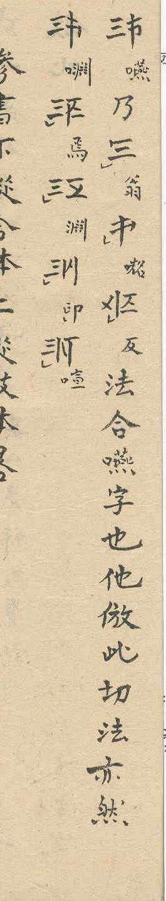
[ONG J CHONG-5] , đọc là yên (Hình 13).[ONG-2 J ONG] , và 22 Hợp Thư của hai Cán trơn cùng một cơ sở, mỗi cơ sở một chữ, chẳng hạn [ONG J ONG] (xem dưới).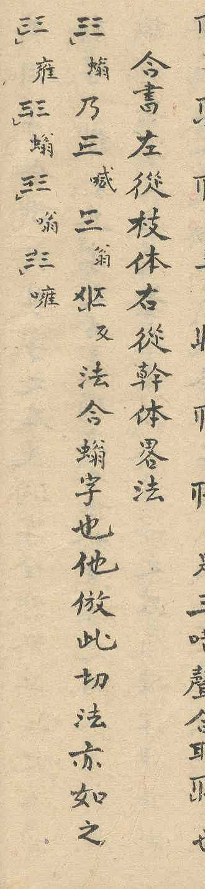
Mục ở tr. 6 cho thấy năm Hợp Thư của ONG: chữ được công thức giải thích và bốn chữ nữa, mang nét đánh dấu ở vị trí 3 đến 6 (ONG-3 đến ONG-6 J ONG). Trong cả hai nguồn, chữ đầu tiên trong số đó được viết mà không thành phần nào có nét đánh dấu, [ONG J ONG] , dù công thức đánh vần nó bằng Chi ONG-2. Đề xuất giữ dạng như nguồn viết (Phụ lục A). Đó là một cặp mà cả hai phương pháp đều không tạo ra: Cán trơn đứng ở cả hai vị trí. Độc lập với điều đó, tổ hợp ONG-2 J ONG được chứng thực ở tr. 5, cột 8.
Trong cả hai phương pháp, các thành phần được viết trái trước phải. Trong cặp phiên thiết đây cũng là thứ tự của phụ âm đầu và vần. Trong Hợp Thư, công thức nêu các thành phần theo cùng thứ tự như chúng được viết.
Mục 音数 (tr. 8) đếm các chữ của chữ viết này, mỗi chữ với tám thanh: 176 Cán đơn (單幹書, 22 × 8), 880 chữ đơn (單書, 110 Chi × 8), 880 合書 với Chi bên trái và Cán bên phải (110 × 8) và 18.480 合書 với Cán bên trái và Chi bên phải (2.310 × 8). Cách sắp xếp Chi trước chỉ được tính cho 110 cặp cùng cơ sở, và cách sắp xếp Cán trước chỉ cho 2.310 cặp khác cơ sở (22 × 105). Mọi cơ sở đều tham gia các cặp này, nên cả 22 cơ sở đều xuất hiện dưới dạng Cán trơn trong tổ hợp. Nguồn dùng tên 合書 cho cả hai cách sắp xếp trong mục này. Đề xuất này giữ tên Hợp Thư cho cách sắp xếp Chi trước, như trong đầu đề của mục ở tr. 6 (合書左從枝体右從幹体).
Vị trí. Hai phương pháp cùng nhau cho thấy mỗi loại thành phần ở mỗi vị trí của một cặp.
| Thành phần | Ở bên trái | Ở bên phải |
|---|---|---|
| Cán trơn | Cặp phiên thiết: [ONG J CHONG-5] (tr. 7) |
Hợp Thư: [ONG-2 J ONG] (tr. 5, tr. 6) |
| Chi | Hợp Thư: [ONG-2 J ONG] |
Cặp phiên thiết: [ONG J CHONG-5] |
| Cán đánh dấu | Không có trong nguồn | Không có trong nguồn |
Các đầu đề của nguồn gọi tên các vị trí theo cùng cách: 左從枝体右從幹体, thân Chi ở bên trái và thân Cán ở bên phải, và trong mục đếm số là Cán ở bên trái và Chi ở bên phải. Các thành phần được tạo ra cho cả hai vị trí. Cặp nào có cách đọc là câu hỏi thứ hai, do hai phương pháp trả lời: các con số của nguồn tính 2.420 cặp mà hai phương pháp đọc được, và không tính cặp nào khác. Nguồn không nói rằng các cặp khác không viết được, và với ONG J ONG nguồn viết một cặp như vậy. Việc mã hoá đi theo vị trí (5.1): nó chấp nhận một Cán trơn hoặc một Chi ở mỗi bên, và để cách đọc của một cặp cho các phương pháp của nguồn và cho các lối chính tả của người dùng (3.2).
Một cặp có thể mang thành phần thứ ba, một Chi đơn, ở phía trên. Nguồn mô tả điều này cho một Hợp Thư. Quy tắc của nguồn là 參書下從合体上從枝体, phần dưới theo thân 合 và phần trên theo thân Chi (tr. 7). Cả hai Tham Thư được chứng thực đều đứng trên một Hợp Thư, và đề xuất này hiểu 合体 trong quy tắc là một Hợp Thư. Thành phần thứ ba thì không bị hạn chế, nên quy tắc của nguồn bao gồm 110 × 110 = 12.100 Tham Thư. Vị trí phía trên chỉ được chứng thực cho Chi.
Ngữ pháp không giữ điều kiện này cho phần dưới. Vì nó tạo mọi cặp, nó đặt một Chi lên trên mọi cặp (5.1). Cách hiểu rộng hơn về 合体, theo đó cặp nào cũng có thể mang thành phần thứ ba (Phụ lục A), vì vậy là câu hỏi về cách đọc nguồn, không phải về việc mã hoá.
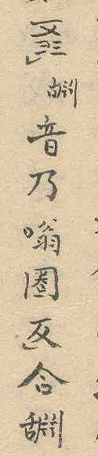
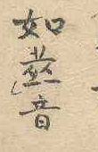
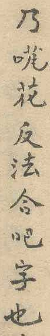
Thứ tự của các thành phần do nguồn cho biết: công thức giải thích một chữ Tham Thư nêu thành phần dưới trước và thành phần trên sau (tr. 7). Công thức giải thích chữ [ONG-5 J ONG C KHONG-5 TONE-SEMICIRCLE-LOWER-LEFT] (ký hiệu ở 5.1, Hình 15): một Hợp Thư của ONG với Chi KHONG-5 ở trên. Nó được viết 音乃嗡圈反合, theo sau là chữ Nôm 舌片爿一 (淵 với bộ 舌), chưa rõ cách đọc. Hai chữ đánh vần là các chú âm có ở chỗ khác trong nguồn: 嗡 đứng cạnh Hợp Thư ONG-5 J ONG trong danh sách ở tr. 6, và 圈 cạnh Chi KHONG-5 trong bảng Chi (tr. 4). Như vậy công thức nêu đúng hai phần mà hình dạng của chữ cho thấy. Ví dụ thứ hai được giải thích bằng một công thức cùng dạng (tr. 7, Hình 16): [BONG-5 J BONG C HONG-2 TONE-SEMICIRCLE-LOWER-LEFT] , viết 音乃花反法合吧字也. Ở đây 花 là chú âm của Chi HONG-2 trong bảng Chi (tr. 3). Nguồn mô tả cấu trúc của Tham Thư và, với mỗi ví dụ, cách phát âm, nhưng không cho cách đọc: ví dụ thứ nhất 'nói nhanh, lưỡi cuộn dưới hàm, hai hàm răng mở rộng, môi trên dưới thu lại tám phía' (其音疾語…舌卷在頷下兩牙广朮闊開上下唇縮八方成音也), ví dụ thứ hai nói nhanh với hai môi mím lại (tr. 7). Chỉ với hai ví dụ, không thể xác định chức năng của ba thành phần trong một Tham Thư. Vì vậy đề xuất này chỉ coi Tham Thư là một cấu tạo hình thức và không khẳng định gì về cách phát âm. Việc mã hoá theo thứ tự của công thức: cặp đứng trước như một đơn vị hoàn chỉnh, và ký tự nối Tham Thư thêm thành phần thứ ba vào nó (5.1).
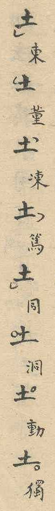
Dấu thanh là một vòng tròn hoặc nửa vòng tròn đặt ở một trong bốn góc của chữ, cho tám thanh theo hệ âm dương (陰陽) của Trung Hoa. Nguồn giải thích hệ thống này sau bảng Chi: "dương dùng vòng tròn đầy, âm dùng nửa vòng tròn" (陽用全圈，陰用半圈, tr. 4), và nêu góc cho mỗi loại thanh: chân trái (左足) cho bình, vai trái (左肩) cho thượng, vai phải (右肩) cho khứ và chân phải (右足) cho nhập (tr. 5). Nguồn minh hoạ tám dấu trên một chữ, Cán trơn của đông, chú âm 東 董 凍 篤 cho âm và 同 洞 動 獨 cho dương (tr. 5). Thứ tự của 洞 và 動 trong dãy này được bàn ở Phụ lục A. Góc cho biết loại thanh và hình dạng cho biết âm vực: nửa vòng tròn đánh dấu âm (陰), vòng tròn đánh dấu dương (陽).
| Góc | Loại thanh | Nửa vòng tròn (âm) | Vòng tròn (dương) |
|---|---|---|---|
| Dưới trái | bình 平 | âm bình (ngang) | dương bình (huyền) |
| Trên trái | thượng 上 | âm thượng (hỏi) | dương thượng (ngã) |
| Trên phải | khứ 去 | âm khứ (sắc) | dương khứ (nặng) |
| Dưới phải | nhập 入 | âm nhập (sắc trong âm tiết tận cùng bằng -p, -t, -c) | dương nhập (nặng trong âm tiết tận cùng bằng -p, -t, -c) |
Thanh ngang có dấu riêng, một nửa vòng tròn ở góc dưới trái (tr. 6). Một chữ mang nhiều nhất một dấu thanh, và nhiều chữ không mang dấu nào. Ở tr. 6, một đoạn đánh dấu thanh ngang cho mọi chữ Quốc Âm Tân Tự trừ hai chữ cuối, vốn không có dấu. Vì vậy một chữ không có dấu thanh để thanh không xác định. Các thành phần đứng riêng cũng mang dấu thanh (tr. 6).
Nguồn không quy định hướng của nửa vòng tròn. Mọi ví dụ đều cho thấy phía mở của nó hướng vào tâm của chữ (tr. 5). Dạng tròn và góc cạnh của nửa vòng tròn là biến thể viết tay, không phải các dấu khác nhau: Nguồn 1 viết cùng một dấu khi tròn, khi gần như một cái móc, còn Nguồn 2 viết mọi dấu thanh của đoạn ở tr. 6 theo dạng góc cạnh.
Ba điểm của nguồn không ảnh hưởng đến việc mã hoá.
Hợp Thư đầu tiên của tr. 6. Mục ở tr. 6 cho thấy năm Hợp Thư của ONG: chữ được công thức giải thích và bốn chữ nữa, mang nét đánh dấu ở vị trí 3 đến 6 (ONG-3 đến ONG-6 J ONG). Trong cả hai nguồn, chữ đầu tiên trong số đó được viết mà không thành phần nào có nét đánh dấu, [ONG J ONG] , dù công thức đánh vần nó bằng Chi ONG-2 (喊) và Cán đánh dấu (翁). Có hai cách hiểu. Nếu đó là chỗ viết nhầm của bản gốc chung, thì chữ đó là ONG-2 J ONG và dãy đi qua cả năm Chi của ONG. Nếu nó được viết có chủ ý, thì ONG J ONG là một loại Hợp Thư riêng, gồm hai Cán trơn cùng một cơ sở. Nguồn không giải quyết câu hỏi này, và một bản phiên âm phải giữ dạng mà nguồn viết (4.1). Việc mã hoá không phụ thuộc vào câu trả lời. Ngữ pháp tạo cặp hai Cán trơn như mọi cặp khác (5.1), nó được vẽ như mọi cặp khác (5.5) và được phân đoạn như mọi cặp khác (6.2). Độc lập với cách hiểu, tổ hợp ONG-2 J ONG được chứng thực ở tr. 5, cột 8.
Cách hiểu 合体 trong quy tắc của Tham Thư. Nguồn có thể được hiểu theo hai cách. Theo cách hiểu hẹp, 合体 là một Hợp Thư, và quy tắc bao gồm 12.100 Tham Thư. Theo cách hiểu rộng, thuật ngữ này bao gồm mọi cặp, và cặp nào cũng có thể mang thành phần thứ ba. Trong mục đếm số, nguồn dùng 合書 cho cả hai cách sắp xếp (7.4), nên 合体 trong quy tắc có thể chỉ bất kỳ cặp nào. Cách hiểu hẹp dựa trên ba điểm: cả hai Tham Thư được chứng thực đều đứng trên một cặp Chi trước cùng cơ sở, mục ở tr. 6 dùng 合書 trong đầu đề chỉ cho cách sắp xếp Chi trước, và các cặp phiên thiết được mô tả trong một mục riêng (反切諧音法). Mục đếm số không cho con số của Tham Thư (參書倣此, 'Tham Thư cũng vậy'). Đề xuất này mô tả Tham Thư theo cách hiểu hẹp (7.5). Việc mã hoá không phụ thuộc vào lựa chọn này: ngữ pháp đặt một Chi lên trên bất kỳ cặp nào (5.1), với cùng các ký tự và cùng cách phân đoạn.
洞 và 動 trong dãy tám thanh. Nguồn nêu rõ 同 洞 動 獨 là các thanh bình, thượng, khứ, nhập (平上去入, tr. 4), trong khi truyền thống vận thư xếp 動 vào thanh thượng và 洞 vào thanh khứ. 洞 có các cách đọc đỗng và động (Tự điển chữ Nôm trích dẫn, tr. 403). Bằng cách đặt 洞 vào thanh thượng, nguồn đọc nó là đỗng, để 同 洞 動 獨 (đồng, đỗng, động, độc) theo các thanh tiếng Việt huyền, ngã, nặng và nặng nhập.
Các đoạn định vị trong nguồn, theo trang của Nguồn 1 (phần 7). Một chữ QATT được viết là {x}, với x là chú âm Nôm bên cạnh nó trong nguồn; một chuỗi thành phần trong ngoặc vuông được viết theo ký hiệu của 5.1.
| Trang | Đoạn | Cho thấy |
|---|---|---|
| 1 | 我國附於中華日前只 | Niên đại: chữ 華 bị bớt nét cuối, kiêng huý tên Hồ Thị Hoa, mẹ vua Thiệu Trị (1841–1847), nên văn bản không cổ hơn đời vua này |
| 1 | 國音新字序 | Tên của chữ: 國音新字 (Quốc Âm Tân Tự), trong đầu đề bài tựa 國音新字序 |
| 1 | 嘗考之三易卦。始於兩次於四成於八。重之爲六十四。変之爲四千九十六。 | Kết hợp từ ít ký hiệu: bài tựa lấy sự phát triển của các quẻ trong Kinh Dịch làm mẫu |
| 2 | 幹音二十二字 | Bảng liệt kê dưới đầu đề 幹音二十二字 có 22 dạng, các Cán đánh dấu, mỗi dạng ba nét và một nét đánh dấu ngắn; thuật ngữ Cán (幹): bảng liệt kê 22 Cán có đầu đề 幹音二十二字, 'âm thân, hai mươi hai chữ' |
| 2 | 幹音二十二字 · Chú âm Nôm theo thứ tự (IDS khi không dùng ký tự đã mã hoá): 翁 ông · 木禺 ngông · 胸 hông · 木功 gông · 工 công · lông · 竜里 trông · 東 đông · 農 nông · 宗 tông · 通 thông · 亻戍 nhông · 柊 chông · 月容 giông · 衝 xông · 空 không · 滝 sông · 山庸 rông · 蒙 mông · bông · vông · 口風 phông | Bảng liệt kê 22 âm cơ sở (幹音二十二字) theo thứ tự của nguồn, mỗi âm có chữ QATT và chú tên âm bằng chữ Nôm |
| 2 | 五星聚斗南城居士阮子書 | Chữ ký của tác giả: Nam Thành cư sĩ Nguyễn Tử (南城居士阮子) |
| 2 | 茲模索音畫創爲一樣書。以便私記已也。豈敢云通倮蠱之聲音乎哉。 | Mục đích của chữ: tác giả đặt ra để ghi chép riêng (以便私記) |
| 2 | 窃想書契之造。必有一箇簡易之格。而人物聲音靡有遺者。只以秦而泯耳。 | Ý tưởng của chữ: chữ viết ban đầu được tạo ra theo một phép đơn giản không sót âm nào |
| 3 | 枝字一百一十字 | Năm Chi cho mỗi Cán: nét đánh dấu chỉ nằm ở đầu nét (sáu vị trí); Cán đánh dấu có nét ở vị trí đầu (trên trái hoặc trên giữa), và dời nó ngược chiều kim đồng hồ cho các Chi theo thứ tự |
| 3 | 枝字一百一十字 · 109 Chi, mỗi Chi có một chữ Nôm chú âm | Bảng Chi dưới đầu đề 枝字一百一十字, '110 chữ Chi'; bảng có 109, một dạng bị bỏ sót |
| 4 | 本字八音識別法。於本字上依陰陽四象識別，每一字各成八字。如同東合一字，惟同音其聲在上為陽，東音其聲在下為陰。以陰陽分配，則東董凍篤四音是陰之平上去入，同洞動獨四音是陽之平上去入。以四象識別，則陽用全圈，陰用半圈。 其同字全識於其字之左足，洞字全識於其字之左肩，動字全識於其字之右肩，獨字全識於其字之右足；東字半識於其字之左足，董字半識於其字之左肩，凍字半識於其字之右肩，篤字半識於其字之右足。如下。他倣此。 {東}{董}{凍}{篤}{同}{洞}{動}{獨} | Dấu thanh: vòng tròn và nửa vòng tròn ở bốn góc, tám thanh; tám thanh theo phép âm dương của Trung Hoa |
| 5 | 反切諧音法 | Phép phiên thiết được mô tả trong mục Phiên Thiết Hài Âm Pháp (反切諧音法); thành phần thuộc các cơ sở khác nhau, Cán trơn đứng trước |
| 5 | {東}{董}{凍}{篤}{同}{洞}{動}{獨} | Dấu thanh ở cả bốn góc, cả hai hình dạng: Cán trơn của đông viết với cả tám dấu thanh, chú âm 東 董 凍 篤 同 洞 動 獨; hướng của nửa vòng tròn: phía mở hướng vào tâm trong mọi ví dụ; Cán đánh dấu và Cán trơn đều xuất hiện đứng riêng, cùng cách đọc, cả khi có dấu thanh; chỉ Cán trơn kết hợp, Cán đánh dấu thì không bao giờ |
| 5 | 其同字全識於其字之左足，洞字全識於其字之左肩，動字全識於其字之右肩，獨字全識於其字之右足；東字半識於其字之左足，董字半識於其字之左肩，凍字半識於其字之右肩，篤字半識於其字之右足。如下。他倣此。 | Nguồn liệt kê các thanh trước với bốn nửa vòng tròn, rồi bốn vòng tròn đầy, mỗi loại bắt đầu ở dưới trái và đi theo chiều kim đồng hồ |
| 6 | 如{翁}{宜}{反}反云{翁}{翁}{焉}{衣}是合取{衣}{字}也 | Thành phần viết đứng riêng và cạnh nhau khi văn bản giải thích việc kết hợp, kể cả một Cán trơn đứng riêng và hai Cán trơn cạnh nhau; dấu thanh không bắt buộc: chữ có và không có dấu thanh trong cùng một đoạn; thanh ngang (âm bình) có dấu riêng, một nửa vòng tròn ở góc dưới trái; chữ không có dấu thanh không có nghĩa là thanh ngang; dấu thanh trên các thành phần đứng riêng (Cán trơn và Chi); dạng tròn và góc cạnh của cùng một dấu thanh là biến thể viết tay: Nguồn 1 viết dấu khi tròn, khi gần như một cái móc; Nguồn 2 viết mọi dấu thanh của đoạn theo dạng góc cạnh |
| 6 | 合書左從枝体右從幹体畧法 {螉}乃{喊}{翁}{反}法合螉字也他倣此切法亦如之 {雍} {螉} {嗡} {噰} | Hợp Thư: chỉ có cặp cùng cơ sở, Chi đứng trước; chức năng trong Hợp Thư: công thức nêu Chi trước và cho vần bằng Cán; vai trò của Chi chưa được xác định |
| 7 | 參書下從合体上從枝体畧 | Quy tắc Tham Thư: phần dưới theo thân 合, được hiểu là một Hợp Thư |
| 7 | 故二十二幹字為標足以 | Thuật ngữ Cán (幹) cũng xuất hiện với 字 trong 二十二幹字為標, 'lấy 22 chữ Cán làm dấu'; cùng với 幹音二十二字, nguồn dùng 幹 với 音 và với 字 |
| 7 | {嚥}乃{翁}{口𠸜}{反}法合嚥字也他倣此切法亦然 {口淵} {焉} {淵} {卬} {喧} | Ví dụ minh hoạ một cặp phiên thiết, Cán trơn của ONG và Chi CHONG-5, đọc là yên, và một danh sách năm chữ |
| 7 | [ONG-5 J ONG C KHONG-5 TONE-SEMICIRCLE-LOWER-LEFT] 音乃嗡圈反合舌片爿一 | Thứ tự đọc của Tham Thư: công thức giải thích một chữ Tham Thư nêu thành phần dưới trước |
| 7 | [BONG-5 J BONG C HONG-2 TONE-SEMICIRCLE-LOWER-LEFT] 音乃花反法合吧字也 | Tham Thư thứ hai được chứng thực: một Hợp Thư của BONG với Chi HONG-2 ở trên, được giải thích bằng một công thức |
| 8 | 音数 單幹書協契象（即識別也）成一百七十六字。單書協契象成八百八十字（內有喊字等四十六字其八聲稀微疊語）。合書左從枝体右從幹体協契象成八百八十字。合書左從幹体右從枝体協契象成一萬八千四百八十字（內有一千九百三十二字其八声稀微疊語）。參書倣此。 | Số lượng chữ trong mục 音数: 176 Cán đơn, 880 chữ đơn, 880 合書 với Chi bên trái và Cán bên phải, 18.480 合書 với Cán bên trái và Chi bên phải, mỗi con số đã tính dấu thanh; tám lần 22, 110, 110 và 2.310 |
Nguyễn Hữu Vinh, Đặng Thế Kiệt, Nguyễn Doãn Vượng, Lê Văn Đặng, Nguyễn Văn Sâm, Nguyễn Ngọc Bích, Trần Uyên Thi. Tự điển chữ Nôm trích dẫn (字典𡨸喃摘引) / Dictionary of Nôm Characters with Excerpts. Hoa Kỳ: Viện Việt-Học, 2009. Tr. 403, mục 洞 đỗng (động, đùng), U+6D1E, có tham chiếu chéo đến 洞 động.
Nguyễn Quang Hồng. Quốc âm tân tự – một phương án chữ Việt ghi âm thế kỷ 19. Tạp chí Hán Nôm, số 1, 1986. Trực tuyến trong kho lưu trữ của tạp chí: https://hannom.vass.gov.vn/web/tchn/data/8602v.htm (trang web ghi số 1/1989, nhưng chứa số 1 năm 1986, như Trần Nghĩa trích dẫn trong Tạp chí Hán Nôm, số 2, 1987).
Nguồn trên web, truy cập ngày 25 tháng 10 năm 2026:
Trả lời các câu hỏi của Proposal Summary Form của ISO/IEC JTC 1/SC 2/WG 2, phiên bản L2/14-232 (N4502), mà trang Unicode của mẫu đơn (https://www.unicode.org/L2/summary.html) ghi là hiện hành vào tháng 10 năm 2026. Các mục đánh dấu [TBD] còn để ngỏ.
A. Hành chính
| Mục | Nội dung |
|---|---|
| Tiêu đề | Preliminary proposal to encode Quốc Âm Tân Tự (QATT) in the SMP of the UCS |
| Người đề xuất | Nguyễn Quốc Trung |
| Loại người đề xuất | Đóng góp cá nhân |
| Ngày nộp | [TBD] |
| Đề xuất hoàn chỉnh | Không. Đề xuất sơ bộ; xem mục 4.1 (ký tự nối Tham Thư) và các điểm [TBD] |
B. Kỹ thuật – Chung
| Mục | Nội dung |
|---|---|
| Chữ mới hay bổ sung vào khối đã có | Chữ mới: Quốc Âm Tân Tự |
| Số ký tự | 164 (mục 4.1) |
| Loại được đề xuất | B.1 – Chuyên biệt (bộ nhỏ): một bộ ký tự nhỏ với một cộng đồng người dùng hạn chế, những người tạo tài liệu mới bằng chúng, không dùng hằng ngày cho giao tiếp thông thường (mục 3.1). Bản thân chữ là chữ lịch sử, được chứng thực trong hai bản chép tay của một văn bản không cổ hơn đời Thiệu Trị (1841–1847; mục 7.1) |
| Bộ ký tự với tên và hình dạng | Có: tên ở mục 4.3, bảng mã ở mục 4.4 và trong phông tham chiếu. Tên chỉ dùng A–Z, chữ số, dấu cách và gạch nối, không từ nào bắt đầu bằng chữ số (ONG-1 như trong U+1069 MYANMAR SIGN WESTERN PWO KAREN TONE-1), và không tên nào trùng với tên đã có hoặc tên đề xuất khác theo cách so khớp lỏng của UAX #44 (đã kiểm tra với Unicode 18.0) |
| Người cung cấp phông chữ | Người đề xuất (Nguyễn Quốc Trung) |
| Giấy phép phông chữ | Độc quyền, dùng miễn phí để đọc và viết; Unicode, Inc. và ISO/IEC JTC 1/SC 2 được phép dùng phông cho bảng mã và các ấn phẩm của tiêu chuẩn (mục 5.5) |
| Tài liệu tham khảo và ví dụ đã công bố | Có: Phụ lục C; các trang của nguồn ở evidence/ và ở Phụ lục B |
| Vấn đề mã hoá đặc biệt | Nhập các chuỗi có ký tự nối; bố cục dọc và ngang (2.2, 5.1, 5.2) |
| Thuộc tính của chữ | Lớp kết hợp của dấu thanh (6.1), cụm grapheme (6.2), ngắt dòng, hướng viết và dấu câu (6.3). Không có chữ hoa/thường, không có giá trị số hay tiền tệ |
C. Kỹ thuật – Lý do
| Mục | Nội dung |
|---|---|
| Đã nộp trước đây | Không |
| Liên hệ với cộng đồng người dùng | Có: diễn đàn r/Qatt (qua máy chủ Discord của nó) và nhóm Facebook QATT (một bài đăng trong nhóm) đã được hỏi ý kiến ngày 29 tháng 10 năm 2026 (mục 3.5). Một đề nghị về thứ tự điểm mã được bàn ở mục 4.5 |
| Thông tin về cộng đồng người dùng | Mục 3.1 |
| Ngữ cảnh sử dụng | Một cộng đồng nhỏ hiện nay viết và chia sẻ văn bản trên mạng (mục 3.1), và bản chép tay lịch sử (mục 7.1). Hiếm |
| Ký tự đang được dùng | Có: trong bản chép tay và trên web (mục 7.1, 3.1, Phụ lục C) |
| Phải nằm trong BMP | Không. Đề xuất dành cho SMP |
| Khoảng liền | Có: 176 điểm mã trong 11 cột 16 (mục 4.2) |
| Dạng trình bày của một ký tự đã có | Không. Dấu thanh không phải là các chữ cái biến âm U+A700..U+A707 (5.3) |
| Có thể mã hoá bằng chuỗi các ký tự đã có | Không. Các thành phần là ký tự mới; chữ hai và ba thành phần là chuỗi các ký tự mới (4.1) |
| Dễ nhầm với một ký tự đã có | Có, một số dạng giống chữ Hán và chữ Hangul; danh sách ở Phụ lục F |
| Ký tự kết hợp hoặc chuỗi tổ hợp | Có: tám dấu thanh kết hợp, ký tự nối thành phần và ký tự nối Tham Thư (7.4, 7.5, 5.1). Ngữ pháp của các chuỗi tổ hợp và ví dụ của từng loại, kèm hình glyph, ở mục 5.1; số chuỗi có thể có ở mục 4.1 |
| Thuộc tính đặc biệt | Hai ký tự nối và tám dấu thanh (mục 6); không có chức năng điều khiển |
| Ký tự tương thích chữ Hán | Không |
Quốc Âm Tân Tự: U+xxxx0–U+xxxAF
Quốc Âm Tân Tự (國音新字, "chữ mới ghi âm của tiếng nước nhà") là một loại chữ ghi âm cho tiếng Việt. Chữ được biết qua một văn bản thế kỷ XIX, không cổ hơn đời Thiệu Trị (1841–1847), lưu giữ trong hai bản chép tay tại Viện Nghiên cứu Hán Nôm ở Hà Nội. Trong văn bản đó chữ đứng giữa Hán Nôm và được đối xử như chữ Hán Nôm. Ngày nay một cộng đồng nhỏ sử dụng chữ này.
Cấu trúc. Chữ có 22 cơ sở, mỗi cơ sở vẽ bằng ba nét. Một cơ sở có bảy dạng: một dạng không có nét đánh dấu, Cán trơn, và sáu dạng có một nét đánh dấu ngắn ở một trong sáu đầu nét. Dạng có nét đánh dấu ở vị trí đầu là Cán đánh dấu, năm dạng còn lại là Chi. Mọi dạng đều đứng riêng được. Hai dạng viết cạnh nhau kết hợp thành một chữ chiếm một ô vuông, gọi là một cặp, và một thành phần thứ ba, một Chi, có thể đứng trên một cặp. Một Cán trơn hoặc một Chi có thể đứng ở mỗi bên của một cặp. Nguồn cho quy tắc đọc của các cặp gồm một Cán trơn và một Chi khác cơ sở, Cán trơn đứng trước, và cùng cơ sở, Chi đứng trước. Mọi chữ đều có thể mang một dấu thanh ở một trong bốn góc.
Mã hoá. 154 dạng được mã hoá thành chữ cái nguyên tử, nhóm theo cơ sở. Chữ ghép là các chuỗi: U+xxx9A QUOC AM TAN TU COMPONENT JOINER đứng giữa hai thành phần được viết cạnh nhau trong một ô, và U+xxx9B QUOC AM TAN TU THAM THU COMBINER đứng trước một thành phần được viết trên cặp đứng trước. Các thành phần được lưu theo thứ tự viết, trái trước phải và dưới trước trên, và không bị đổi thứ tự. Các thành phần không có ký tự nối là các ký tự riêng.
Dấu thanh. Tám dấu kết hợp đi sau toàn bộ chuỗi. Một nửa vòng tròn hoặc vòng tròn ở một trong bốn góc cho biết loại thanh qua góc và âm vực qua hình dạng. Một chữ mang nhiều nhất một dấu thanh, và chữ không có dấu thanh để thanh không xác định.
Hiển thị. Phông chữ vẽ mỗi chuỗi trong một ô vuông với kích thước của chữ Hán. Các thành phần chia đều ô, và dấu thanh nằm ở một góc của cả ô.
Bố cục và dấu câu. Chữ theo quy ước của Hán Nôm. Nguồn viết theo dòng dọc từ phải sang trái, không có dấu cách giữa các từ. Văn bản số cũng được trình bày theo dòng ngang. Chữ không có dấu câu riêng và dùng dấu câu của khối CJK Symbols and Punctuation.
Một số dạng trơn trông giống các ký tự đã có, phần lớn là chữ Hán cấu tạo từ cùng các nét thẳng. Việc so sánh dưới đây được làm bằng mắt trên bảng mã (4.4) và bao gồm các dạng trơn và các dạng có đánh dấu trông giống ký tự đã có. Các dạng có đánh dấu khác thêm một nét đánh dấu và gần với các ký tự của dạng trơn tương ứng. Danh sách còn sơ bộ [TBD: xác nhận với dữ liệu confusables của UTR #36].
| Dạng | QATT | Ký tự đã có tương tự |
|---|---|---|
| ONG (+00) | | U+4E09 三, U+2630 ☰ TRIGRAM FOR HEAVEN |
| NGONG (+07) | | U+4E0C 丌, U+5140 兀 |
| GONG (+15) | | U+0045 E, U+3151 ㅑ HANGUL LETTER YA |
| CONG (+1C) | | U+3155 ㅕ HANGUL LETTER YEO, U+4E2C 丬 |
| LONG (+23) | | U+5DDD 川 |
| TRONG (+2A) | | U+5E72 干, U+4E8E 于 |
| TRONG-1 (+2B) | | U+5348 午 |
| TRONG-4 (+2E) | | U+738B 王, U+58EC 壬 |
| DONG (+31) | | U+571F 土, U+58EB 士 |
| DONG-1 (+32) | | U+738B 王, U+58EC 壬 |
| THONG (+46) | | U+5344 卄, U+5EFE 廾 |
| THONG-1 (+47) | | U+5347 升 |
| NHONG-1 (+4E) | | U+5347 升 |
| CHONG (+54) | | U+30AD キ KATAKANA LETTER KI |
| CHONG-2 (+56) | | U+725B 牛 |
| GIONG-2 (+5D) | | U+725B 牛 |
| XONG (+62) | | U+005A Z, U+4E4B 之 |
| SONG (+70) | | U+0418 И CYRILLIC CAPITAL LETTER I |
| RONG (+77) | | U+004E N |
| MONG (+7E) | | U+53C8 又, U+3121 ㄡ BOPOMOFO LETTER OU |
| Dấu thanh vòng tròn trên phải (+A1) | | U+309A COMBINING KATAKANA-HIRAGANA SEMI-VOICED SOUND MARK |
| Dấu thanh (+9C..+A3) | (4.4) | U+302A..U+302D dấu thanh chữ Hán (cùng góc, khác hình dạng, 5.3) |
Mọi ký tự đề xuất đều có giá trị Script riêng, nên việc phát hiện văn bản trộn nhiều chữ viết tách chúng khỏi các ký tự này. Các dạng được phân biệt bằng số lượng và vị trí của các nét, và trong một ô, ngữ cảnh của chữ khiến việc nhầm lẫn trong văn bản liền mạch khó xảy ra.